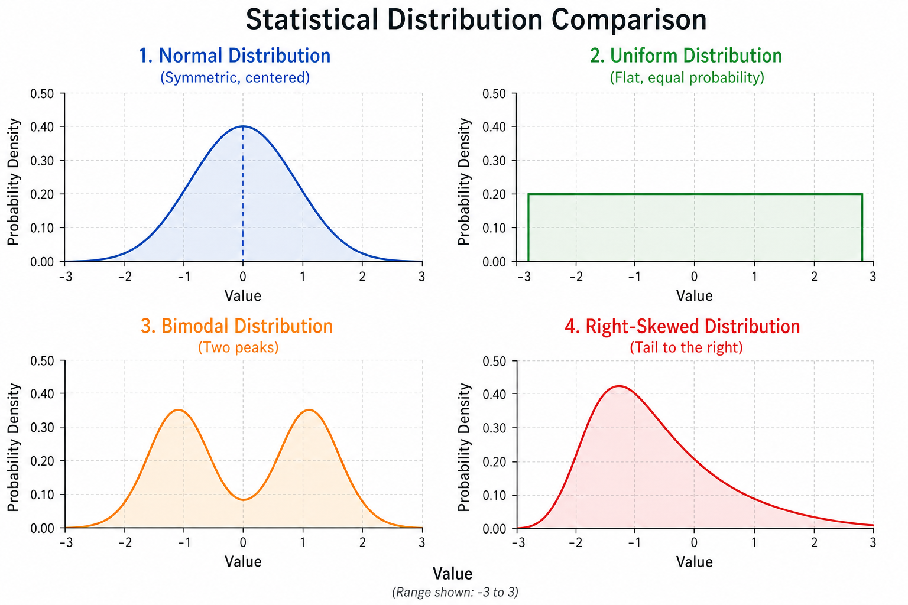
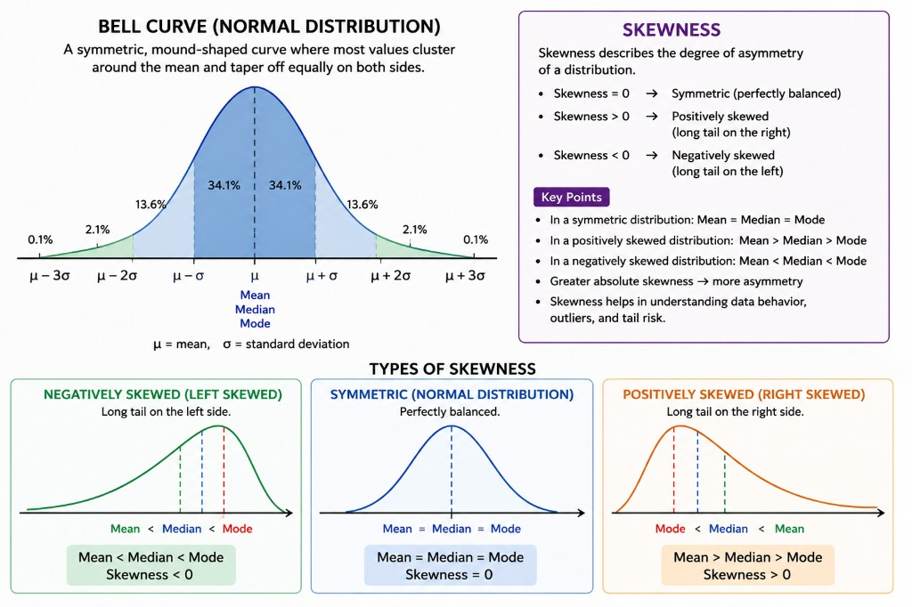
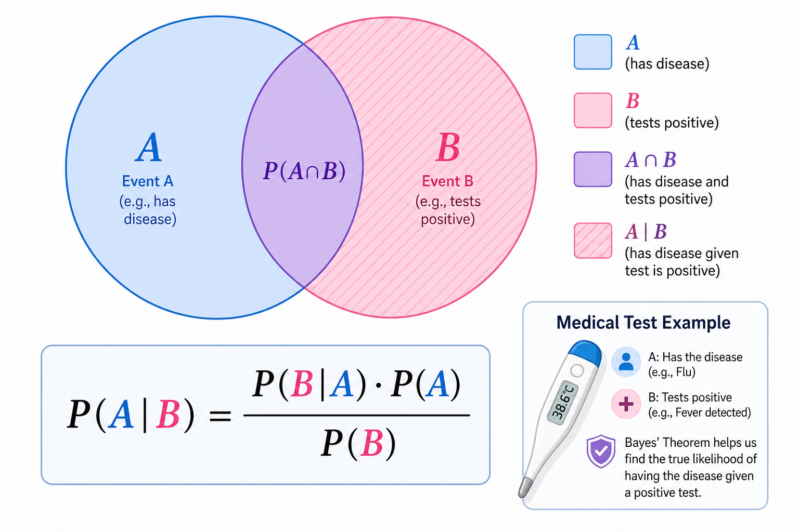
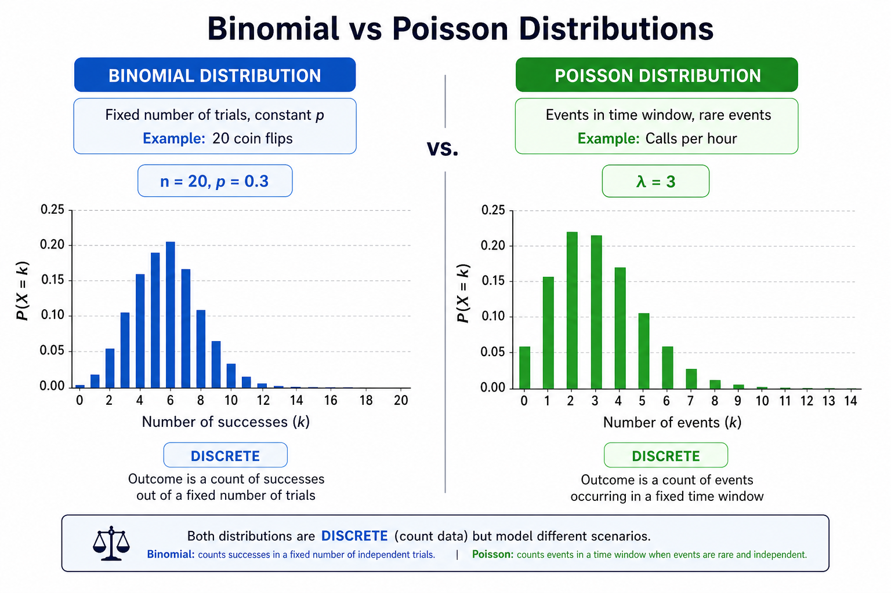
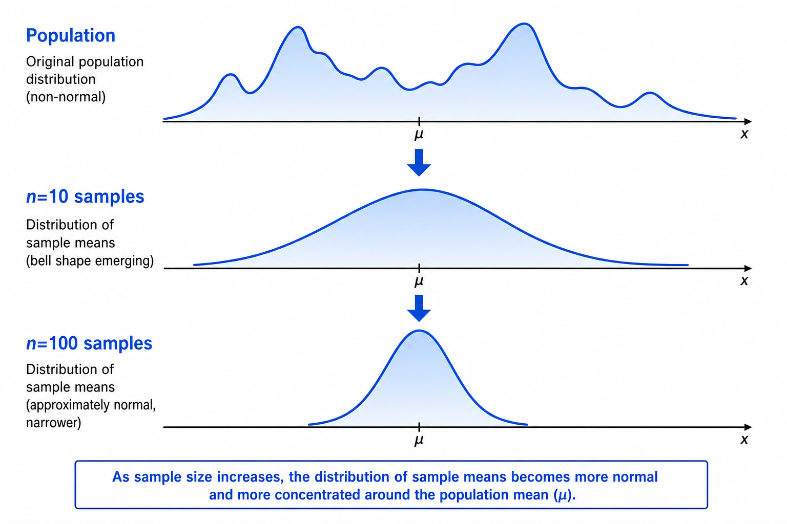
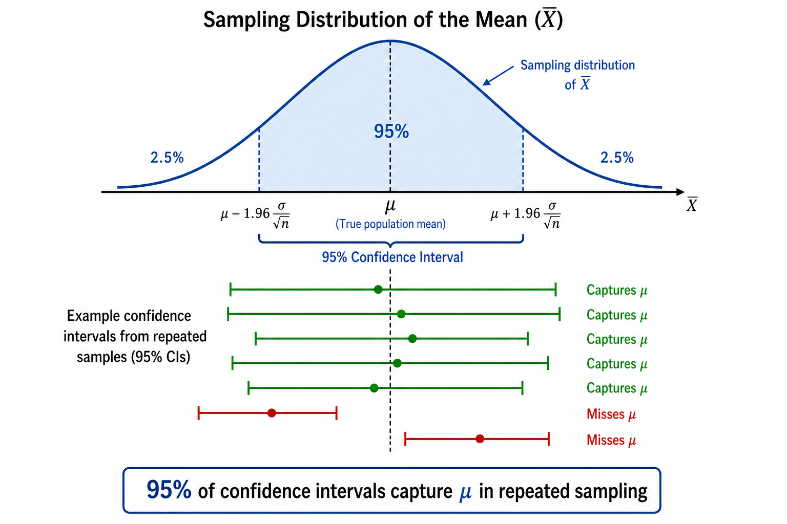

<!DOCTYPE html>
<html lang="en">
<head>
<meta charset="UTF-8">
<meta name="viewport" content="width=device-width,initial-scale=1">
<title>ISM Theory Guide — AIMLCZC418</title>
<script>
window.MathJax = {
  tex: { inlineMath: [['\\(','\\)']], displayMath: [['\\[','\\]']], processEscapes: true },
  options: { skipHtmlTags: ['script','noscript','style','textarea','pre','code'] }
};
</script>
<script src="https://cdnjs.cloudflare.com/ajax/libs/mathjax/3.2.2/es5/tex-mml-chtml.min.js" async></script>
<style>
:root{--bg:#f1f5f9;--paper:#fff;--text:#1e293b;--muted:#64748b;--accent:#2563eb;--border:#e2e8f0;--sidebar-w:260px;--radius:12px}
*,*::before,*::after{box-sizing:border-box}
html{scroll-behavior:smooth;font-size:15px}
body{margin:0;font-family:-apple-system,BlinkMacSystemFont,"Segoe UI",Roboto,sans-serif;line-height:1.55;color:var(--text);background:var(--bg)}
a{color:#2563eb;text-decoration:none;font-weight:500}a:hover{text-decoration:underline}
.page{display:flex;min-height:100vh;max-width:1280px;margin:0 auto;background:var(--paper);box-shadow:0 4px 24px rgba(0,0,0,.06)}
#sidebar{width:var(--sidebar-w);flex-shrink:0;background:#1e293b;color:#e2e8f0;border-right:none;padding:1rem .75rem 2rem;font-size:.74rem;position:sticky;top:0;height:100vh;overflow-y:auto}
#sidebar .brand{font-weight:800;font-size:.9rem;color:#fff;margin-bottom:.15rem}
#sidebar .brand-sub{font-size:.68rem;color:#94a3b8;margin-bottom:1rem}
#sidebar .brand-sub a{color:#67e8f9}
#sidebar nav h3{font-size:.58rem;text-transform:uppercase;letter-spacing:.1em;color:#64748b;margin:1rem 0 .3rem;font-weight:700}
#sidebar ol{list-style:none;padding:0;margin:0}
#sidebar li a{display:block;padding:.3rem .55rem;border-radius:6px;color:#cbd5e1;line-height:1.3}
#sidebar li a:hover{background:#334155;color:#fff;text-decoration:none}
#sidebar li.sub a{padding-left:1.1rem;font-size:.68rem;color:#94a3b8}
#sidebar li.guide-link a{color:#6ee7b7}
#content{flex:1;min-width:0;padding:1.5rem 2rem 3rem;max-width:780px}
.hero{background:linear-gradient(135deg,#1e3a8a 0%,#7c3aed 50%,#059669 100%);color:#fff;padding:1.6rem 1.8rem;border-radius:var(--radius);margin-bottom:1.5rem;box-shadow:0 8px 24px rgba(37,99,235,.25)}
.hero h1{margin:0 0 .35rem;font-size:1.45rem;color:#fff}
.hero .meta{font-size:.82rem;opacity:.92;margin:0}
h2.session-header{font-size:1.2rem;margin:2rem 0 .5rem;padding:.85rem 1.1rem;border-radius:var(--radius);border:none;display:flex;align-items:center;gap:.6rem;flex-wrap:wrap}
h2#overview{margin-top:0;font-size:1.2rem;border-bottom:3px solid #2563eb;padding-bottom:.4rem;color:#1e3a8a}
.src{font-size:.75rem;color:var(--muted);margin:0 0 1rem}
.lead{font-size:.92rem;color:var(--muted);margin-bottom:1rem}
.sess-badge{font-size:.65rem;font-weight:800;padding:3px 10px;border-radius:99px;text-transform:uppercase;letter-spacing:.04em}
.sec-block{border:1px solid var(--border);border-radius:var(--radius);padding:1rem 1.15rem 1.15rem;margin:1.25rem 0;background:#fff;box-shadow:0 1px 4px rgba(0,0,0,.04)}
.sec-block h3{margin:0 0 .65rem;font-size:.98rem;color:#1e293b;display:flex;align-items:center;gap:.5rem;flex-wrap:wrap}
.gist-banner{border-left:4px solid;padding:.65rem .9rem;border-radius:0 8px 8px 0;margin:.5rem 0 1rem;font-size:.88rem;line-height:1.45}
.gist-banner strong{color:inherit;opacity:.85;font-size:.72rem;text-transform:uppercase;letter-spacing:.04em;display:block;margin-bottom:.2rem}
.wwwh-grid{display:grid;grid-template-columns:repeat(3,1fr);gap:.55rem;margin:.75rem 0}
@media(max-width:640px){.wwwh-grid{grid-template-columns:1fr}}
.wwwh-card{padding:.65rem .75rem;border-radius:8px;font-size:.8rem;line-height:1.4}
.wwwh-card.what{background:#eff6ff;border:1px solid #93c5fd}
.wwwh-card.why{background:#ecfdf5;border:1px solid #6ee7b7}
.wwwh-card.where{background:#f5f3ff;border:1px solid #c4b5fd}
.wwwh-label{display:block;font-size:.62rem;font-weight:800;text-transform:uppercase;letter-spacing:.06em;margin-bottom:.25rem}
.wwwh-card.what .wwwh-label{color:#1d4ed8}
.wwwh-card.why .wwwh-label{color:#047857}
.wwwh-card.where .wwwh-label{color:#6d28d9}
.wwwh-card p{margin:0}
.point-grid{list-style:none;padding:0;margin:.75rem 0;display:grid;gap:.45rem}
.point-card{background:#f8fafc;border:1px solid #e2e8f0;border-radius:8px;padding:.55rem .75rem;font-size:.84rem;line-height:1.45;margin:0}
.point-card::before{content:"▸ ";color:#2563eb;font-weight:700}
.mini-card{border-radius:8px;padding:.75rem .9rem;margin:.65rem 0;font-size:.84rem;line-height:1.45}
.mini-label{display:block;font-size:.65rem;font-weight:800;text-transform:uppercase;letter-spacing:.05em;margin-bottom:.35rem}
.mini-card.def{background:#eff6ff;border:1px solid #93c5fd}.mini-card.def .mini-label{color:#1d4ed8}
.mini-card.formula{background:#f5f3ff;border:2px solid #a78bfa}.mini-card.formula .mini-label{color:#6d28d9}
.mini-card.example{background:#fffbeb;border:1px solid #fcd34d}.mini-card.example .mini-label{color:#b45309}
.mini-card.warn{background:#fef2f2;border:1px solid #fca5a5}.mini-card.warn .mini-label{color:#dc2626}
.mini-card.tip{background:#ecfdf5;border:1px solid #6ee7b7}.mini-card.tip .mini-label{color:#047857}
.mini-card.analogy{background:#fdf4ff;border:1px solid #e879f9}.mini-card.analogy .mini-label{color:#a21caf}
.mini-card p{margin:.35rem 0}
.eq-block{font-size:1rem;text-align:center;padding:.4rem;background:#fff;border-radius:6px;margin-top:.3rem}
.formula-strip{background:linear-gradient(135deg,#eff6ff,#fdf4ff);border:2px solid #818cf8;border-radius:var(--radius);padding:.9rem 1rem;margin:.75rem 0}
.formula-strip .f-item{padding:.55rem 0;border-bottom:1px dashed #c7d2fe}
.formula-strip .f-item:last-child{border-bottom:none}
.formula-strip .f-label{font-size:.68rem;font-weight:800;color:#4338ca;text-transform:uppercase;letter-spacing:.05em}
.formula-strip .f-eq{font-size:1rem;margin-top:.25rem;display:block}
.session-visual{background:#fff;border:2px solid #bbf7d0;border-radius:var(--radius);padding:.85rem;margin:.75rem 0 1rem}
.fig-cap{font-size:.78rem;color:var(--muted);margin-top:.45rem;line-height:1.45}
.diagram-img,.svg-wrap svg{width:100%;max-width:100%;height:auto;border-radius:8px;border:1px solid var(--border)}
.key-takeaway{background:linear-gradient(90deg,#fef3c7,#fce7f3);border:2px solid #f59e0b;border-radius:8px;padding:.65rem .85rem;margin:.65rem 0;font-size:.82rem}
.key-takeaway p{margin:0}
.exam-map{background:linear-gradient(135deg,#ecfdf5,#eff6ff);border:2px solid #34d399;border-radius:var(--radius);padding:1rem;margin:1rem 0}
.exam-map h4{color:#047857;font-size:.8rem;margin:0 0 .5rem;text-transform:uppercase;letter-spacing:.05em}
.exam-map ul{margin:0;padding-left:1.2rem;font-size:.85rem}
.exam-map li{margin:.3rem 0}
.session-grid{display:grid;grid-template-columns:repeat(auto-fill,minmax(140px,1fr));gap:.5rem;margin:1rem 0}
.session-chip{display:block;padding:.55rem .65rem;border-radius:8px;text-align:center;font-size:.75rem;font-weight:600;text-decoration:none;color:inherit;border:2px solid;transition:transform .15s}
.session-chip:hover{transform:translateY(-2px);text-decoration:none}

.diagram{margin:1.2rem 0;text-align:center}
.diagram-img,.diagram .img-fallback{width:100%;max-width:640px;height:auto;display:block;margin:0 auto;border:1px solid var(--border);border-radius:8px;background:#fff;box-shadow:0 2px 8px rgba(0,0,0,.06)}
.svg-wrap{display:block;width:100%;max-width:640px;margin:0 auto}
.svg-wrap svg{width:100%;height:auto;min-height:140px;border:1px solid var(--border);border-radius:8px;background:#fff;display:block;box-shadow:0 2px 8px rgba(0,0,0,.06)}
.fig-cap{font-size:.82rem;color:var(--muted);margin-top:.55rem;line-height:1.5;max-width:640px;margin-left:auto;margin-right:auto;text-align:left;padding:0 .5rem}

@media(max-width:900px){.page{flex-direction:column}#sidebar{width:100%;height:auto;position:relative}}
</style>
</head>
<body>
<div class="page">
<aside id="sidebar">
<div class="brand">ISM Theory Guide</div>
<div class="brand-sub">AIMLCZC418 · <a href="index.html">← Hub</a></div>
<nav>
<h3>Sessions</h3>
<ol><li><a href="#overview">Overview</a></li><li><a href="#session1">Descriptive Statistics</a></li><li class="sub"><a href="#session1-intro">Statistics: turning raw numbers into decisions</a></li><li class="sub"><a href="#session1-step0">Step 0 — Know your data before you touch it</a></li><li class="sub"><a href="#session1-step1">Step 1 — Where is the centre? (mean, median, mode)</a></li><li class="sub"><a href="#session1-step2">Step 2 — How spread out is it? (range, variance, S</a></li><li class="sub"><a href="#session1-step3">Step 3 — What is its shape? (skew and symmetry)</a></li><li class="sub"><a href="#session1-step4">Step 4 — One tidy picture: the five-number summary</a></li><li class="sub"><a href="#session1-summary">Putting it all together</a></li><li><a href="#session2">Probability Basics</a></li><li class="sub"><a href="#session2-nested">The three nested ideas: sample space, outcome, eve</a></li><li class="sub"><a href="#session2-building">Building new events from old ones</a></li><li class="sub"><a href="#session2-me-vs-ind">The classic confusion: mutually exclusive vs. inde</a></li><li class="sub"><a href="#session2-axioms">What exactly is a probability?</a></li><li class="sub"><a href="#session2-counting">Counting your way to a probability</a></li><li class="sub"><a href="#session2-practice">Practice problems</a></li><li><a href="#session3">Conditional Probability</a></li><li class="sub"><a href="#session3-intro">Probability changes when you learn something</a></li><li class="sub"><a href="#session3-conditional">Conditional probability: shrinking the world</a></li><li class="sub"><a href="#session3-mult">The multiplication rule: chaining events together</a></li><li class="sub"><a href="#session3-indep">Independence: when a clue tells you nothing</a></li><li class="sub"><a href="#session3-total">Total probability: assemble the whole from clean p</a></li><li class="sub"><a href="#session3-practice">Practice problems</a></li><li><a href="#session4">Bayes &amp; Naïve Bayes</a></li><li class="sub"><a href="#session4-naive">From one feature to many: the Naïve Bayes classifi</a></li><li><a href="#session5">Random Variables</a></li><li class="sub"><a href="#session5-joint">Two variables at once: joint, marginal, conditiona</a></li><li><a href="#session6">Probability Distributions</a></li><li class="sub"><a href="#session6-bernoulli">Bernoulli: the atom of randomness</a></li><li class="sub"><a href="#session6-binomial">Binomial: Bernoulli on repeat</a></li><li class="sub"><a href="#session6-poisson">Poisson: counting rare events in a window</a></li><li class="sub"><a href="#session6-normal">Normal: the shape that keeps showing up</a></li><li class="sub"><a href="#session6-zscore">Z-scores: one table to rule them all</a></li><li class="sub"><a href="#session6-approx">When Binomial wears the bell</a></li><li class="sub"><a href="#session6-inference-trio">First hello to the inference trio</a></li><li class="sub"><a href="#session6-practice">Practice problems from the slides</a></li><li><a href="#session7">Sampling &amp; Estimation</a></li><li class="sub"><a href="#session7-pick-sample">How to pick a sample</a></li><li class="sub"><a href="#session7-variation">Sampling variation</a></li><li class="sub"><a href="#session7-sampling-dist">The sampling distribution</a></li><li class="sub"><a href="#session7-clt">The Central Limit Theorem</a></li><li class="sub"><a href="#session7-finite">Finite populations</a></li><li class="sub"><a href="#session7-proportions">Proportions ride the same train</a></li><li class="sub"><a href="#session7-point-est">Point estimates</a></li><li class="sub"><a href="#session7-ci">Confidence intervals</a></li><li class="sub"><a href="#session7-sample-size">Designing the study: how big a sample</a></li></ol>
<h3>Also</h3>
<ol>
<li class="guide-link"><a href="ISM_Revision_Sheet.html">Revision Sheet</a></li>
<li class="guide-link"><a href="ISM_Past_Papers.html">Past Papers</a></li>
</ol>
</nav>
</aside>
<main id="content">
<div class="hero">
<h1>Introduction to Statistical Methods</h1>
<p class="meta">Prof. Saurabh companion sessions · Sessions 1–7</p>
</div>

<section id="overview">
<h2 id="overview">Overview</h2>
<p class="lead">Scannable cards — formulas, diagrams, practice links. Not a PDF dump.</p>
<div class="session-grid"><a class="session-chip" href="#session1" style="background:#ecfdf5;border-color:#059669;color:#059669">S1 · Descriptive</a><a class="session-chip" href="#session2" style="background:#eff6ff;border-color:#2563eb;color:#2563eb">S2 · Probability</a><a class="session-chip" href="#session3" style="background:#f5f3ff;border-color:#7c3aed;color:#7c3aed">S3 · Conditional</a><a class="session-chip" href="#session4" style="background:#fdf2f8;border-color:#db2777;color:#db2777">S4 · Bayes</a><a class="session-chip" href="#session5" style="background:#fffbeb;border-color:#d97706;color:#d97706">S5 · Random Vars</a><a class="session-chip" href="#session6" style="background:#fef2f2;border-color:#dc2626;color:#dc2626">S6 · Distributions</a><a class="session-chip" href="#session7" style="background:#ecfeff;border-color:#0891b2;color:#0891b2">S7 · Sampling</a></div>
<div class="exam-map">
<h4>Exam map</h4>
<ul>
<li><strong>Mid-sem EC-2:</strong> Sessions 1–5 + S6 distributions</li>
<li><strong>End-sem EC-3:</strong> S6–7 + correlation, tests — <a href="ISM_PYQ_Workbook.html">Workbook</a> · <a href="ISM_Past_Papers.html">Papers</a></li>
</ul>
</div>
</section>
<section id="session1"><h2 class="session-header" style="background:#ecfdf5;color:#059669;border-left:5px solid #059669"><span class="sess-badge" style="background:#ecfdf5;color:#059669;border:1px solid #059669">Descriptive</span> Session 1 — Descriptive Statistics</h2><p class="src">Centre, spread, shape, box plots, outliers</p><div class="session-visual"><figure class="diagram"><figcaption class="fig-cap">Session 1 map: centre (mean/median), spread (SD/IQR), shape (skew), and the box plot for outliers. Practice: TYPE 1-2.</figcaption></figure></div><div class="sec-block" id="session1-intro"><h3>Statistics: turning raw numbers into decisions</h3><div class="gist-banner" style="border-color:#059669;background:#ecfdf5"><strong>In one line:</strong> Turn raw numbers into decisions: organise → summarise → interpret.</div><div class="wwwh-grid">
<div class="wwwh-card what"><span class="wwwh-label">What</span><p>is directly visible. Statistics does the same with data: we collect it, organise it neatly, analyse it, infer something, and finally decide. That is</p></div>
<div class="wwwh-card why"><span class="wwwh-label">Why</span><p>statistics is often called “data-driven decision making.”
What, why,</p></div>
<div class="wwwh-card where"><span class="wwwh-label">Where</span><p>— for this whole session What: descriptive statistics — summarising a dataset with a few honest numbers and one good picture.
Why: a thousand raw numbers overwhelm us; three or four well-chosen summaries let us actually </p></div>
</div><ul class="point-grid"><li class="point-card">On its own, a pile of numbers tells you almost nothing.</li><li class="point-card">Statistics is the craft of making that pile talk.</li><li class="point-card">Statistics does the same with data: we collect it, organise it neatly, analyse it, infer something, and finally decide.</li><li class="point-card">Why: a thousand raw numbers overwhelm us; three or four well-chosen summaries let us actually see the data.</li><li class="point-card">To understand any dataset we ask four simple questions, and this session answers each in turn: What kind of data is it?</li><li class="point-card">What is its shape (and are there any oddballs)?</li></ul></div><div class="sec-block" id="session1-step0"><h3>Step 0 — Know your data before you touch it</h3><div class="gist-banner" style="border-color:#059669;background:#ecfdf5"><strong>In one line:</strong> Check data type first — nominal, ordinal, interval, or ratio.</div><ul class="point-grid"><li class="point-card">Before computing anything, identify what kind of numbers you have.</li><li class="point-card">The data type decides which summaries are even allowed.</li><li class="point-card">Picture a staircase from least to most informative; each step unlocks more operations:</li><li class="point-card">Nominal — just names, no order.</li><li class="point-card">Eye colour, marital status.</li><li class="point-card">Allowed question: “same or different?” Only the mode makes sense.</li><li class="point-card">Ordinal — ordered, but the gaps are unequal.</li><li class="point-card">Grades A, B, C; medals gold, silver, bronze.</li></ul></div><div class="sec-block" id="session1-step1"><h3>Step 1 — Where is the centre? (mean, median, mode)</h3><div class="gist-banner" style="border-color:#059669;background:#ecfdf5"><strong>In one line:</strong> Three centres: mean (balance), median (robust), mode (most frequent).</div><figure class="diagram"><figcaption class="fig-cap">Concept visual for session1 step1</figcaption></figure><div class="formula-strip"><div class="f-item"><span class="f-label">Mean</span><span class="f-eq">\[\bar{y} = \frac{1}{n}\sum_{i=1}^{n} y_i\]</span></div><div class="f-item"><span class="f-label">Median</span><span class="f-eq">\[\text{middle value after sorting}\]</span></div><div class="f-item"><span class="f-label">Mode</span><span class="f-eq">\[\text{most frequently occurring value}\]</span></div></div><div class="key-takeaway"><p>Practice questions: <a href="ISM_PYQ_Workbook.html#type1"><strong>TYPE 1</strong></a>, <a href="ISM_PYQ_Workbook.html#type2"><strong>TYPE 2</strong></a></p></div><div class="wwwh-grid">
<div class="wwwh-card what"><span class="wwwh-label">What</span><p>would it be?
This “typical value” is a measure of central tendency, and there are three classic answers, each with its own personality.
Definition 3.1: Mean, median, mode For data y1, . . . , yn:
• the mean (average) is </p></div>
<div class="wwwh-card why"><span class="wwwh-label">Why</span><p>a lone outlier drags the mean.
Why &amp;</p></div>
<div class="wwwh-card where"><span class="wwwh-label">Where</span><p>to use each one.
• Mean — the workhorse. Every value contributes, it is easy to compute, and it feeds directlyinto the standard deviation. Use it for fairly symmetric data with no wild outliers. Weakness:
it is easily dr</p></div>
</div><ul class="point-grid"><li class="point-card">If you had to describe the whole dataset with a single number, what would it be?</li></ul><div class="mini-card def"><span class="mini-label">📘 Definition</span><p><strong>Mean, median, mode For data y1, . . . , yn:</strong></p></div><ul class="point-grid"><li class="point-card">the mean (average) is \(\bar{y}\) = \(\frac{1}{n}\sum\) i=1 yi;</li><li class="point-card">the median is the middle value once the data is sorted (the average of the two middle values when n is even);</li><li class="point-card">the mode is the value that appears most often.</li><li class="point-card">Three ways to find the “middle of the room” Picture people of different heights standing in a room.</li><li class="point-card">The mean is the balance point: if heights were weights on a seesaw, the mean is where it balances.</li><li class="point-card">Every person tugs on it.</li><li class="point-card">The median is the person in the middle of the line when everyone queues up by height — half are shorter, half taller.</li><li class="point-card">It only cares about position, not size.</li></ul><div class="mini-card example"><span class="mini-label">✏ Example</span><p><strong>The three centres on real data — “time to get ready” You time your morning routine (minutes)</strong></p><p>over ten work days:
39, 29, 43, 52, 39, 44, 40, 31, 44, 35.
Mean: add them (= 396) and divide by 10, giving \(\bar{y}\) = 39.6. Median: sort first — 29, 31, 35, 39, 39, 40, 43, 44, 44, 52 — and average the two middle (5th and 6th) values: 39+40 = 39.5. Because the mean (39.6) and median (39.5)
almost coincide, the data is nearly symmetric with no e</p></div><div class="mini-card example"><span class="mini-label">✏ Example</span><p><strong>The mode in action — counting server failures A network manager logs daily server failures over two weeks: 1, 3, 0, 3, 2</strong></p><p>The value 3 appears five times — more than any other — so the mode is 3. The most typical day has three failures. (Notice the mode ignores that lone 26 completely; like the median, it is unbothered by outliers.) The mean’s weakness: it is easily dragged Because every value pulls on the balance point, a single extreme value (an outlier) can drag the</p></div></div><div class="sec-block" id="session1-step2"><h3>Step 2 — How spread out is it? (range, variance, SD)</h3><div class="gist-banner" style="border-color:#059669;background:#ecfdf5"><strong>In one line:</strong> Spread: range, variance s², SD s — how far values scatter.</div><div class="formula-strip"><div class="f-item"><span class="f-label">Sample variance</span><span class="f-eq">\[s^2 = \frac{1}{n-1}\sum_{i=1}^{n}(y_i - \bar{y})^2\]</span></div><div class="f-item"><span class="f-label">Sample SD</span><span class="f-eq">\[s = \sqrt{s^2}\]</span></div><div class="f-item"><span class="f-label">Range</span><span class="f-eq">\[\max - \min\]</span></div></div><div class="key-takeaway"><p>Practice questions: <a href="ISM_PYQ_Workbook.html#type1"><strong>TYPE 1</strong></a></p></div><ul class="point-grid"><li class="point-card">The centre is only half the story.</li><li class="point-card">This is a measure of variability.</li><li class="point-card">Two archers, same average Two archers both average the bullseye.</li><li class="point-card">Same mean — completely different shooters.</li><li class="point-card">Why use it: instant to compute.</li><li class="point-card">Building the standard deviation, step by step.</li></ul><div class="mini-card example"><span class="mini-label">✏ Example</span><p><strong>Standard deviation, fully worked Take the nine values 2, 8, 5, 3, 7, 8, 5, 2, 5. Step 1 — mean: \(\bar{y}\) = 459 = 5. S</strong></p><p>SS = (2−5)2 + (8−5)2 + (5−5)2 + (3−5)2 + (7−5)2 + (8−5)2 + (5−5)2 + (2−5)2 + (5−5)2 = 9 + 9 + 0 + 4 + 4 + 9 + 0 + 9 + 0 = 44.
Step 3 — as a sample, divide by n −1 = 8 and take the root:
s = r 8 = √ 5.5 ≈2.35.
So a typical value sits about 2.35 away from the mean of 5. Reported together, ( \(\bar{y}\), s) = (5, 2.35) already paints a surprisingly co</p></div></div><div class="sec-block" id="session1-step3"><h3>Step 3 — What is its shape? (skew and symmetry)</h3><div class="gist-banner" style="border-color:#059669;background:#ecfdf5"><strong>In one line:</strong> Skew: mean follows the tail; use median when skewed.</div><figure class="diagram"><figcaption class="fig-cap">Bell curve (μ, σ) with 68-95-99.7 rule; skewness types with mean/median/mode order.</figcaption></figure><div class="formula-strip"><div class="f-item"><span class="f-label">Symmetric</span><span class="f-eq">\[\text{Mean} = \text{Median} = \text{Mode}\]</span></div><div class="f-item"><span class="f-label">Right skew</span><span class="f-eq">\[\text{Mode} < \text{Median} < \text{Mean}\]</span></div><div class="f-item"><span class="f-label">Left skew</span><span class="f-eq">\[\text{Mean} < \text{Median} < \text{Mode}\]</span></div></div><div class="key-takeaway"><p>Practice questions: <a href="ISM_PYQ_Workbook.html#type1"><strong>TYPE 1</strong></a></p></div><ul class="point-grid"><li class="point-card">Centre and spread still miss one thing: is the data lopsided?</li><li class="point-card">Left skew: a long tail to the left drags the mean below the median.</li><li class="point-card">Symmetric: mean, median and mode coincide.</li><li class="point-card">Right skew: a long tail to the right drags the mean above the median.</li><li class="point-card">The mean always leans toward the tail.</li><li class="point-card">Read the skew straight off the centre measures</li><li class="point-card">Symmetric: Mean = Median = Mode — e.g. adult heights.</li><li class="point-card">Right (positive) skew: Mean &gt; Median &gt; Mode — e.g. incomes, where a few veryhigh earners stretch the right tail.</li></ul></div><div class="sec-block" id="session1-step4"><h3>Step 4 — One tidy picture: the five-number summary &amp; box plot</h3><div class="gist-banner" style="border-color:#059669;background:#ecfdf5"><strong>In one line:</strong> Five-number summary + box plot; 1.5×IQR flags outliers.</div><div class="formula-strip"><div class="f-item"><span class="f-label">Five-number summary</span><span class="f-eq">\[\min,\ Q_1,\ \text{median},\ Q_3,\ \max\]</span></div><div class="f-item"><span class="f-label">IQR</span><span class="f-eq">\[Q_3 - Q_1\]</span></div><div class="f-item"><span class="f-label">Outlier fences</span><span class="f-eq">\[Q_1 - 1.5\cdot\text{IQR}\ \text{and}\ Q_3 + 1.5\cdot\text{IQR}\]</span></div></div><figure class="diagram"><div class="svg-wrap" role="img" aria-label="session1-step4"><svg xmlns="http://www.w3.org/2000/svg" viewBox="0 0 420 200" font-family="system-ui,sans-serif">
  <rect width="420" height="200" fill="#ffffff" rx="8"/>
  <text x="210" y="22" text-anchor="middle" font-size="13" font-weight="700" fill="#1e3a5f">Five-Number Summary &amp; Box Plot</text>
  <line x1="60" y1="120" x2="360" y2="120" stroke="#64748b" stroke-width="2"/>
  <line x1="100" y1="100" x2="100" y2="140" stroke="#2563eb" stroke-width="2"/>
  <line x1="140" y1="85" x2="140" y2="155" stroke="#2563eb" stroke-width="3"/>
  <rect x="140" y="95" width="120" height="50" fill="#dbeafe" stroke="#2563eb" stroke-width="2"/>
  <line x1="200" y1="85" x2="200" y2="155" stroke="#059669" stroke-width="3"/>
  <line x1="260" y1="85" x2="260" y2="155" stroke="#2563eb" stroke-width="3"/>
  <line x1="300" y1="100" x2="300" y2="140" stroke="#2563eb" stroke-width="2"/>
  <circle cx="340" cy="120" r="6" fill="#dc2626"/>
  <text x="100" y="170" text-anchor="middle" font-size="9" fill="#64748b">Min</text>
  <text x="140" y="170" text-anchor="middle" font-size="9" fill="#64748b">Q1</text>
  <text x="200" y="170" text-anchor="middle" font-size="9" fill="#059669" font-weight="600">Med</text>
  <text x="260" y="170" text-anchor="middle" font-size="9" fill="#64748b">Q3</text>
  <text x="300" y="170" text-anchor="middle" font-size="9" fill="#64748b">Max</text>
  <text x="340" y="170" text-anchor="middle" font-size="9" fill="#dc2626">Outlier</text>
  <text x="210" y="188" text-anchor="middle" font-size="9" fill="#64748b">Outlier if &gt; Q3 + 1.5&#215;IQR or &lt; Q1 - 1.5&#215;IQR</text>
</svg></div><figcaption class="fig-cap">Box plot anatomy: whiskers to min/max (within fences), box = middle 50%, line = median, dots = outliers.</figcaption></figure><div class="key-takeaway"><p>Practice questions: <a href="ISM_PYQ_Workbook.html#type1"><strong>TYPE 1</strong></a>, <a href="ISM_PYQ_Workbook.html#type2"><strong>TYPE 2</strong></a></p></div><ul class="point-grid"><li class="point-card">We can capture a dataset’s centre, spread and shape with just five well-chosen numbers — and then draw them as a single picture that even reveals the oddballs.</li><li class="point-card">The interquartile range IQR = Q3 −Q1 is the spread of the middle 50% of the data.</li><li class="point-card">Because it ignores the extreme quarters at both ends, the IQR is wonderfully resistant to outliers.</li><li class="point-card">The three cut points are Q1, Q2, Q3.</li><li class="point-card">The middle two groups — the everyday, unremarkable majority — span the IQR.</li><li class="point-card">The “whiskers” reach to the most extreme values that are still reasonable.</li></ul><div class="mini-card formula"><span class="mini-label">📐 Formula</span><div class="eq-block">Lower fence = Q1 −1.5 × IQR, Upper fence = Q3 + 1.5 × IQR.
Where it’s used: this exact rule is what statistical software draws as the dots beyond the whiskers in a box plot, and it is a standard first pass for data cleaning before anymodelling. Worked example 6.1: A five-number summary with no outli</div></div><div class="mini-card example"><span class="mini-label">✏ Example</span><p><strong>Now with an outlier — watch the rule catch it Sorted data: 3, 5, 6, 7, 8, 9, 28 (seven values). The median is the 4th va</strong></p><p>Six values sit comfortably inside [−1, 15], but 28 &gt; 15 falls past the upper fence — so the rule correctly flags 28 as an outlier. This is precisely the dot a software box plot would draw beyond the right whisker.</p></div></div><div class="sec-block" id="session1-summary"><h3>Putting it all together</h3><div class="gist-banner" style="border-color:#059669;background:#ecfdf5"><strong>In one line:</strong> Centre + spread + shape + outliers = full picture before probability.</div><ul class="point-grid"><li class="point-card">Try these to lock in the intuition 1. (centre + spread + outliers).</li><li class="point-card">A sample of office noise levels (dBA) ranges from the mid-50s to the low-80s, with most readings clustered in the 60s.</li><li class="point-card">Predict first: will the mean sit above or below the median?</li><li class="point-card">Then compute the mean, standard deviation and IQR, and use the 1.5×IQR rule to check for outliers. 2. (skew detective).</li><li class="point-card">Fat content (grams) of sandwiches: 7, 8, 4, 5, 16, 20, 20, 24, 19, 30, 23, 30, 25, 19, 29, 29, 30, 30, 40, 56.</li><li class="point-card">Find the mean, median, Q1, Q3, the IQR and any outliers.</li></ul></div></section><section id="session2"><h2 class="session-header" style="background:#eff6ff;color:#2563eb;border-left:5px solid #2563eb"><span class="sess-badge" style="background:#eff6ff;color:#2563eb;border:1px solid #2563eb">Probability</span> Session 2 — Probability Basics</h2><p class="src">Sample space, events, axioms, addition rule, counting</p><div class="session-visual"><figure class="diagram"><figcaption class="fig-cap">Events are sets: union, intersection, complement. Addition rule removes double-counting. Practice: TYPE 3.</figcaption></figure></div><div class="sec-block" id="session2-nested"><h3>The three nested ideas: sample space, outcome, event</h3><div class="gist-banner" style="border-color:#2563eb;background:#eff6ff"><strong>In one line:</strong> S (all outcomes) → outcome (one result) → event (subset of S).</div><div class="mini-card def"><span class="mini-label">📘 Definition</span><p><strong>Sample space, outcome, event</strong></p></div><ul class="point-grid"><li class="point-card">The sample space S is the set of all possible outcomes.</li><li class="point-card">Rolling a die: S = {1, 2, 3, 4, 5, 6}.</li><li class="point-card">Testing a chip: S = {accept, reject}.</li><li class="point-card">An outcome is one element of S — a single result.</li><li class="point-card">An event is any subset of S — a bundle of outcomes we care about, such as “the die shows an even number” = {2, 4, 6}.</li><li class="point-card">Each time we run the experiment, an event A either occurs (the outcome lands inside A) or does not (it lands outside).</li><li class="point-card">A theatre stage Picture the sample space S as a whole stage — every spot an actor could stand on.</li><li class="point-card">An outcome is one exact spot.</li></ul></div><div class="sec-block" id="session2-building"><h3>Building new events from old ones</h3><div class="gist-banner" style="border-color:#2563eb;background:#eff6ff"><strong>In one line:</strong> Union, intersection, complement — set ops on events.</div><figure class="diagram"><figcaption class="fig-cap">Concept visual for session2 building</figcaption></figure><div class="formula-strip"><div class="f-item"><span class="f-label">Union</span><span class="f-eq">\[A \cup B:\ \text{A or B (or both)}\]</span></div><div class="f-item"><span class="f-label">Intersection</span><span class="f-eq">\[A \cap B:\ \text{A and B together}\]</span></div><div class="f-item"><span class="f-label">Complement</span><span class="f-eq">\[A^c:\ \text{not A}\]</span></div></div><figure class="diagram"><div class="svg-wrap" role="img" aria-label="session2-building"><svg xmlns="http://www.w3.org/2000/svg" viewBox="0 0 440 160" font-family="system-ui,sans-serif">
  <rect width="440" height="160" fill="#f8fafc" rx="8"/>
  <text x="220" y="18" text-anchor="middle" font-size="13" font-weight="700" fill="#1e3a5f">Set Operations on Events</text>
  <g transform="translate(55,35)">
    <circle cx="30" cy="30" r="22" fill="#dbeafe" stroke="#2563eb"/>
    <circle cx="50" cy="30" r="22" fill="#fce7f3" stroke="#db2777" opacity="0.7"/>
    <text x="40" y="75" text-anchor="middle" font-size="8" fill="#64748b">A U B</text>
  </g>
  <g transform="translate(155,35)">
    <circle cx="30" cy="30" r="22" fill="#dbeafe" stroke="#2563eb"/>
    <circle cx="50" cy="30" r="22" fill="#fce7f3" stroke="#db2777" opacity="0.7"/>
    <rect x="38" y="18" width="14" height="24" fill="#7c3aed" opacity="0.5"/>
    <text x="40" y="75" text-anchor="middle" font-size="8" fill="#64748b">A n B</text>
  </g>
  <g transform="translate(255,35)">
    <rect width="70" height="55" rx="4" fill="#ecfdf5" stroke="#059669"/>
    <circle cx="45" cy="30" r="22" fill="#fff" stroke="#059669" stroke-dasharray="3"/>
    <text x="35" y="75" text-anchor="middle" font-size="8" fill="#64748b">A complement</text>
  </g>
  <g transform="translate(355,35)">
    <circle cx="25" cy="30" r="22" fill="#dbeafe" stroke="#2563eb"/>
    <circle cx="55" cy="30" r="22" fill="#fce7f3" stroke="#db2777"/>
    <text x="40" y="75" text-anchor="middle" font-size="8" fill="#64748b">Mutually exclusive</text>
  </g>
  <text x="220" y="145" text-anchor="middle" font-size="9" fill="#64748b">Union | Intersection | Complement | No overlap</text>
</svg></div><figcaption class="fig-cap">Set operations on events A and B: union (either), intersection (both), complement (not A).</figcaption></figure><div class="key-takeaway"><p>Practice questions: <a href="ISM_PYQ_Workbook.html#type3"><strong>TYPE 3</strong></a></p></div><ul class="point-grid"><li class="point-card">Union A ∪B shades everything in A or B (or both).</li><li class="point-card">Intersection A ∩B shades only the overlap — A and B together.</li><li class="point-card">Complement Ac shades everything not in A.</li><li class="point-card">Mutually exclusive events do not overlap at all.</li><li class="point-card">Union A ∪B — “A or B (or both) happens.”</li><li class="point-card">Intersection A ∩B — “A and B both happen.”</li><li class="point-card">Complement Ac — “A does not happen.” The complement trick — a genuine time-saver Since A either happens or it doesn’t, P(A) + P(Ac) = 1, so P(A) = 1 −P(Ac).</li><li class="point-card">Whenever a question contains the words “at least one,” the opposite (“none”) is usually far easier to count.</li></ul></div><div class="sec-block" id="session2-me-vs-ind"><h3>The classic confusion: mutually exclusive vs. independent</h3><div class="gist-banner" style="border-color:#2563eb;background:#eff6ff"><strong>In one line:</strong> Mutually exclusive ≠ independent (common exam trap).</div><ul class="point-grid"><li class="point-card">Let us settle it for good.</li></ul><div class="mini-card def"><span class="mini-label">📘 Definition</span><p><strong>Mutually exclusive vs. independent</strong></p></div><ul class="point-grid"><li class="point-card">Mutually exclusive (disjoint): the events cannot happen together, A ∩B = ∅, so P(A ∩ B) = 0.</li><li class="point-card">One happening rules out the other.</li><li class="point-card">Independent: one happening gives no information about the other, P(A ∩B) = P(A) P(B).</li><li class="point-card">Two switches, two stories Mutually exclusive is a single light switch: it is either up or down, never both — choosing one forbids the other.</li><li class="point-card">Independent is two switches in different rooms: flipping one tells you nothing about the other. “Can’t happen together” and “don’t affect each other” are completely different statements.</li><li class="point-card">If A occupies a fraction 0.6 of the width and B a fraction 0.4 of the height, then — when they don’t influence each other — their overlap is the rectangle of area 0.6 × 0.4 = 0.24.</li><li class="point-card">Mixing these up is the single most common early-probability error.</li></ul><div class="mini-card example"><span class="mini-label">✏ Example</span><p><strong>Testing independence with two dice Throw a pair of dice and define A = {(1, 2), (2, 1), (2, 2)} and B = {(2, 2), (2, 3),</strong></p><p>The independence test asks: does P(A ∩B) = P(A)P(B)? Here P(A)P(B) = 36 · 936 = 1296 = 148, which is not 136. Since the two sides differ, A and B are dependent — knowing one shifts the odds of the other.</p></div></div><div class="sec-block" id="session2-axioms"><h3>What exactly is a probability?</h3><div class="gist-banner" style="border-color:#2563eb;background:#eff6ff"><strong>In one line:</strong> P(A)≥0, P(S)=1, additivity for disjoint events.</div><ul class="point-grid"><li class="point-card">There are three doorways to a probability, and they agree when the setup is fair.</li><li class="point-card">Three doorways to the same number</li><li class="point-card">Classical (count, when outcomes are equally likely): P(A) = favourable outcomes total outcomes .</li><li class="point-card">A fair die: P(even) = 36.</li><li class="point-card">Empirical (measure by repeating): P(A) ≈times A occurred number of trials .</li><li class="point-card">Flip a coin 10,000 times and the fraction of heads hugs 0.5.</li><li class="point-card">Axiomatic (the modern, rigorous route): forget where the number came from; just insist it obeys the rules below. from 0 to 1 Every probability lives between 0 (impossible) and 1 (certain).</li><li class="point-card">A value of 0.5 means the event is exactly as likely to happen as not.</li></ul><div class="mini-card formula"><span class="mini-label">📐 Formula</span><div class="eq-block">1. Non-negativity: P(A) ≥0.
2. Certainty: P(S) = 1 — something must happen.
3. Additivity: if A and B are mutually exclusive, P(A ∪B) = P(A) + P(B).
Everything else in probability is built from just these three.
Why these three rules are pure common sense (1) You can’t have a −30% chance of rain. (2</div></div><div class="mini-card formula"><span class="mini-label">📐 Formula</span><div class="eq-block">If A and B are mutually exclusive, the overlap is empty and this collapses to P(A ∪B) = P(A) + P(B).
Counting a class without counting twice 30 students take maths and 20 take chemistry, but 10 take both. How many take at least one subject? Not 30 + 20 = 50 — that counts the 10 double-enrolled stude</div></div><div class="mini-card example"><span class="mini-label">✏ Example</span><p><strong>Passing the exams A student passes statistics with P(S) = 23 and maths with P(M) = 1 −59 = 49, and passes at least one w</strong></p><p>P(S ∩M) = P(S) + P(M) −P(S ∪M) = 23 + 49 −45 = 1445. Worked example 6.2: Investors in both markets 75% invest in annuities (A), 45% in the stock market (B), and 85% in at least one. What fraction invest in both? Again solve the addition rule for the overlap:
P(A ∩B) = P(A) + P(B) −P(A ∪B) = 0.75 + 0.45 −0.85 = 0.35.
So 35% are in both — and notice </p></div></div><div class="sec-block" id="session2-counting"><h3>Counting your way to a probability</h3><div class="gist-banner" style="border-color:#2563eb;background:#eff6ff"><strong>In one line:</strong> Count outcomes → divide by |S| when equally likely.</div><ul class="point-grid"><li class="point-card">Grouped by their sum, the counts form a triangle peaking at 7 — the sum with the most ways to occur.</li></ul><div class="mini-card example"><span class="mini-label">✏ Example</span><p><strong>Two dice: three quick questions Using the 36 outcomes above:</strong></p><p>P(sum &gt; 8) = 4+3+2+1 = 1036 = 518, P(sum &lt; 6) = 1+2+3+4 = 1036 = 518.
For “the sum is neither 7 nor 11,” the complement trick shines: sums of 7 or 11 occur in 6 + 2 = 8 ways, so P(neither 7 nor 11) = 1 −836 = 2836 = 79. Worked example 7.2: A committee with a majority of women (counting with choices)
Choose 5 people from 8 men and 4 women. A women-m</p></div></div><div class="sec-block" id="session2-practice"><h3>Practice problems</h3><ul class="point-grid"><li class="point-card">Your turn 1. (complement trick).</li><li class="point-card">A bank’s accounts are 40% savings, 35% current, the rest loans.</li><li class="point-card">Find P(loan), P(not savings), and P(current or loan). 2. (addition rule + Venn).</li><li class="point-card">In a suburb, 60% of homes have internet, 80% have TV, and 50% have both.</li><li class="point-card">What fraction have at least one service?</li><li class="point-card">Draw the two-circle Venn first — the picture makes the answer obvious. 3. (contradiction).</li></ul></div></section><section id="session3"><h2 class="session-header" style="background:#f5f3ff;color:#7c3aed;border-left:5px solid #7c3aed"><span class="sess-badge" style="background:#f5f3ff;color:#7c3aed;border:1px solid #7c3aed">Conditional</span> Session 3 — Conditional Probability</h2><p class="src">P(A|B), independence, total probability, tree diagrams</p><div class="session-visual"><figure class="diagram"><div class="svg-wrap" role="img" aria-label="Session 3 — Conditional Probability"><svg xmlns="http://www.w3.org/2000/svg" viewBox="0 0 440 200" font-family="system-ui,sans-serif">
  <rect width="440" height="200" fill="#f8fafc" rx="8"/>
  <text x="220" y="22" text-anchor="middle" font-size="13" font-weight="700" fill="#1e3a5f">Bayes / Total Probability Tree</text>
  <circle cx="220" cy="45" r="18" fill="#2563eb" stroke="#1e40af"/>
  <text x="220" y="49" text-anchor="middle" font-size="9" fill="#fff">Start</text>
  <line x1="200" y1="60" x2="120" y2="95" stroke="#64748b" stroke-width="2"/>
  <line x1="240" y1="60" x2="320" y2="95" stroke="#64748b" stroke-width="2"/>
  <rect x="80" y="95" width="80" height="36" rx="6" fill="#dbeafe" stroke="#2563eb"/>
  <text x="120" y="117" text-anchor="middle" font-size="9" fill="#1e3a5f">Cause A</text>
  <rect x="280" y="95" width="80" height="36" rx="6" fill="#fce7f3" stroke="#db2777"/>
  <text x="320" y="117" text-anchor="middle" font-size="9" fill="#1e3a5f">Cause B</text>
  <line x1="120" y1="131" x2="100" y2="160" stroke="#64748b"/>
  <line x1="120" y1="131" x2="140" y2="160" stroke="#64748b"/>
  <rect x="60" y="160" width="50" height="28" rx="4" fill="#ecfdf5" stroke="#059669"/>
  <text x="85" y="178" text-anchor="middle" font-size="8">Evidence</text>
  <text x="220" y="192" text-anchor="middle" font-size="9" fill="#64748b">P(A|Evidence) = P(Ev|A)P(A) / P(Evidence)</text>
</svg></div><figcaption class="fig-cap">P(A|B) shrinks the sample space to B. Tree diagrams chain conditional branches. Practice: TYPE 4.</figcaption></figure></div><div class="sec-block" id="session3-intro"><h3>Probability changes when you learn something</h3><div class="gist-banner" style="border-color:#7c3aed;background:#f5f3ff"><strong>In one line:</strong> New info shrinks the sample space — probabilities update.</div><div class="wwwh-grid">
<div class="wwwh-card what"><span class="wwwh-label">What</span><p>,</p></div>
<div class="wwwh-card why"><span class="wwwh-label">Why</span><p>,</p></div>
<div class="wwwh-card where"><span class="wwwh-label">Where</span><p>— for this whole session What: how a probability changes once you learn that another event happened — plus a way to build a hard overall probability out of easy pieces.
Why: almost every real decision is made with partia</p></div>
</div><ul class="point-grid"><li class="point-card">In Session 2 every probability was assigned “cold,” before anything was known.</li><li class="point-card">But real life feeds us clues: a symptom appears, a test result arrives, we discover where we are.</li><li class="point-card">Each clue should update our probabilities.</li><li class="point-card">That updated number is a conditional probability.</li></ul></div><div class="sec-block" id="session3-conditional"><h3>Conditional probability: shrinking the world</h3><div class="gist-banner" style="border-color:#7c3aed;background:#f5f3ff"><strong>In one line:</strong> P(A|B) = P(A∩B)/P(B) — probability of A given B occurred.</div><div class="formula-strip"><div class="f-item"><span class="f-label">Conditional probability</span><span class="f-eq">\[P(A|B) = \frac{P(A \cap B)}{P(B)},\ P(B)>0\]</span></div></div><div class="key-takeaway"><p>Practice questions: <a href="ISM_PYQ_Workbook.html#type4"><strong>TYPE 4</strong></a></p></div><ul class="point-grid"><li class="point-card">Asking “what is P(B)?” surveys the whole world S.</li><li class="point-card">Asking “what is P(B given A)?” throws away every outcome where A did not happen, then asks: of the world that is left (just A), how much is also B?</li><li class="point-card">Zooming in Conditioning is like zooming a map.</li><li class="point-card">Before, you saw the whole country (S).</li><li class="point-card">Someone tells you “we are in this state” (A).</li><li class="point-card">You discard the rest of the map and re-scale this state to fill the screen.</li></ul></div><div class="sec-block" id="session3-mult"><h3>The multiplication rule: chaining events together</h3><div class="gist-banner" style="border-color:#7c3aed;background:#f5f3ff"><strong>In one line:</strong> Chain events: P(A∩B) = P(A|B)·P(B).</div><ul class="point-grid"><li class="point-card">Rearranging the conditional formula (clear the fraction) gives a rule for the probability that two — or many — things all happen.</li></ul><div class="mini-card formula"><span class="mini-label">📐 Formula</span><div class="eq-block">Walking a path, gate by gate To pass through three gates in a row, multiply the chance of clearing each gate given you reached it. “And” across a sequence means multiply along the path; each step’s probabilityis conditioned on having survived the steps before it.</div></div><div class="mini-card example"><span class="mini-label">✏ Example</span><p><strong>Two letters from two bags Bag 1 holds 5 cards, Bag 2 holds 6 cards. The picks are independent (different bags), so the c</strong></p></div></div><div class="sec-block" id="session3-indep"><h3>Independence: when a clue tells you nothing</h3><div class="gist-banner" style="border-color:#7c3aed;background:#f5f3ff"><strong>In one line:</strong> Independent if P(A∩B) = P(A)P(B).</div><ul class="point-grid"><li class="point-card">Sometimes learning A leaves the chance of B exactly as it was.</li><li class="point-card">Then the events are independent, and conditioning changes nothing.</li><li class="point-card">The right-hand form is the easy test: multiply the two single probabilities and see if you get the overlap.</li><li class="point-card">Successive flips are independent.</li><li class="point-card">The gambler who “feels a tails is due” is committing the classic fallacy of imagining memory where there is none.</li><li class="point-card">Without replacement (the deck shrinks and “remembers” what you took) makes them dependent.</li></ul><div class="mini-card example"><span class="mini-label">✏ Example</span><p><strong>The same jar, two ways A jar holds 5 red, 6 blue, 2 white marbles (13 total). Draw two; what is P(both red)?</strong></p><p>With replacement:
13 · 513 = 25169 ≈0.148, Without replacement:
13 · 412 = 539 ≈0.128.
The clue “a red is already gone” lowers the second probability — dependence in action.</p></div><div class="mini-card example"><span class="mini-label">✏ Example</span><p><strong>Testing independence (airports)</strong></p><p>Of 100 surveyed flights, 20 departed late. Airport A handled 45 flights, 9 of them late. Are “departed from A” and “departed late” independent? Compare:
P(late) = 20100 = 0.20, P(late | A) = 945 = 0.20.
They are equal, so the events are independent — which airport you left from told you nothing about lateness. (If the two numbers had differed, the </p></div></div><div class="sec-block" id="session3-total"><h3>Total probability: assemble the whole from clean pieces</h3><div class="gist-banner" style="border-color:#7c3aed;background:#f5f3ff"><strong>In one line:</strong> P(B) = Σ P(B|Aᵢ)P(Aᵢ) over partition {Aᵢ}.</div><div class="formula-strip"><div class="f-item"><span class="f-label">Total probability</span><span class="f-eq">\[P(B) = \sum_i P(B|A_i)P(A_i)\]</span></div></div><figure class="diagram"><div class="svg-wrap" role="img" aria-label="session3-total"><svg xmlns="http://www.w3.org/2000/svg" viewBox="0 0 440 200" font-family="system-ui,sans-serif">
  <rect width="440" height="200" fill="#f8fafc" rx="8"/>
  <text x="220" y="22" text-anchor="middle" font-size="13" font-weight="700" fill="#1e3a5f">Bayes / Total Probability Tree</text>
  <circle cx="220" cy="45" r="18" fill="#2563eb" stroke="#1e40af"/>
  <text x="220" y="49" text-anchor="middle" font-size="9" fill="#fff">Start</text>
  <line x1="200" y1="60" x2="120" y2="95" stroke="#64748b" stroke-width="2"/>
  <line x1="240" y1="60" x2="320" y2="95" stroke="#64748b" stroke-width="2"/>
  <rect x="80" y="95" width="80" height="36" rx="6" fill="#dbeafe" stroke="#2563eb"/>
  <text x="120" y="117" text-anchor="middle" font-size="9" fill="#1e3a5f">Cause A</text>
  <rect x="280" y="95" width="80" height="36" rx="6" fill="#fce7f3" stroke="#db2777"/>
  <text x="320" y="117" text-anchor="middle" font-size="9" fill="#1e3a5f">Cause B</text>
  <line x1="120" y1="131" x2="100" y2="160" stroke="#64748b"/>
  <line x1="120" y1="131" x2="140" y2="160" stroke="#64748b"/>
  <rect x="60" y="160" width="50" height="28" rx="4" fill="#ecfdf5" stroke="#059669"/>
  <text x="85" y="178" text-anchor="middle" font-size="8">Evidence</text>
  <text x="220" y="192" text-anchor="middle" font-size="9" fill="#64748b">P(A|Evidence) = P(Ev|A)P(A) / P(Evidence)</text>
</svg></div><figcaption class="fig-cap">Probability tree: multiply along branches, add across disjoint paths.</figcaption></figure><div class="key-takeaway"><p>Practice questions: <a href="ISM_PYQ_Workbook.html#type4"><strong>TYPE 4</strong></a></p></div><ul class="point-grid"><li class="point-card">Some probabilities are hard head-on but easy once we split the world into cases.</li><li class="point-card">If the cases A1, . . . , Ak are mutually exclusive and together cover everything (a partition of S), then any event B can be reached only through one of them.</li></ul><div class="mini-card formula"><span class="mini-label">📐 Formula</span><div class="eq-block">In words: walk down every branch, multiply the probabilities along each path, then add the paths up.
Many roads into one town To count travellers reaching a town, don’t track each person. Take every road leading in, count the traffic on each road, and add. Each “road” is a case Ai; the traffic on it</div></div><div class="mini-card example"><span class="mini-label">✏ Example</span><p><strong>The poisonous-plant park A park is 50% Forest A (20% poisonous), 30% Forest B (40% poisonous), 20% Forest C (70% poisono</strong></p><p>P(poison) = (0.20)(0.50) + (0.40)(0.30) + (0.70)(0.20) = 0.10 + 0.12 + 0.14 = 0.36.
No single forest is “36%”, yet the weighted blend across all three is.</p></div><div class="mini-card example"><span class="mini-label">✏ Example</span><p><strong>A noisy binary channel A channel sends a 1 with probability 0.4 (and a 0 with 0.6). A sent 0 is received correctly90% of</strong></p><p>P(rec 1) = (0.4)(0.95)
| {z } sent 1, correct + (0.6)(0.10)
| {z } sent 0, flipped = 0.38 + 0.06 = 0.44.</p></div><div class="mini-card example"><span class="mini-label">✏ Example</span><p><strong>Will the mining job finish on time?</strong></p><p>Rain finishes the job on time with probability 0.42; no rain, 0.90. Rain has probability 0.45.
Split on the weather:
P(on time) = (0.45)(0.42) + (0.55)(0.90) = 0.189 + 0.495 = 0.684.</p></div></div><div class="sec-block" id="session3-practice"><h3>Practice problems</h3><ul class="point-grid"><li class="point-card">Your turn 1. (complement + independence).</li><li class="point-card">Of 300 adults, 272 are right-handed.</li><li class="point-card">Picking 3 with replacement, find P(all three right-handed) and P(at least one right-handed). (Hint: “at least one” is easiest as 1 −P(none).) 2. (without replacement).</li><li class="point-card">From a 52-card deck dealt without replacement, find P(both of the first two cards are queens).</li><li class="point-card">Redo it with replacement and compare — which is larger, and why? 3. (independence test).</li><li class="point-card">A card is drawn from a deck missing the ace of diamonds (51 cards).</li></ul></div></section><section id="session4"><h2 class="session-header" style="background:#fdf2f8;color:#db2777;border-left:5px solid #db2777"><span class="sess-badge" style="background:#fdf2f8;color:#db2777;border:1px solid #db2777">Bayes</span> Session 4 — Bayes &amp; Naïve Bayes</h2><p class="src">Bayes theorem, posterior, Naïve Bayes classifier</p><div class="session-visual"><figure class="diagram"><figcaption class="fig-cap">Bayes flips cause and effect: posterior = (likelihood x prior) / evidence. Naive Bayes scores each class. Practice: TYPE 5-6.</figcaption></figure></div><div class="sec-block" id="session4-naive"><h3>From one feature to many: the Naïve Bayes classifier</h3><div class="gist-banner" style="border-color:#db2777;background:#fdf2f8"><strong>In one line:</strong> Score each class: P(C) × ∏ P(word|C); pick max.</div><div class="formula-strip"><div class="f-item"><span class="f-label">Naive Bayes</span><span class="f-eq">\[P(C|w_1,\ldots,w_k) \propto P(C)\prod_j P(w_j|C)\]</span></div><div class="f-item"><span class="f-label">Laplace smoothing</span><span class="f-eq">\[P(w|C) = \frac{\text{count}(w,C)+\alpha}{\text{count}(C)+V\alpha}\]</span></div></div><figure class="diagram"><div class="svg-wrap" role="img" aria-label="session4-naive"><svg xmlns="http://www.w3.org/2000/svg" viewBox="0 0 420 180" font-family="system-ui,sans-serif">
  <rect width="420" height="180" fill="#f8fafc" rx="8"/>
  <text x="210" y="22" text-anchor="middle" font-size="13" font-weight="700" fill="#1e3a5f">Naive Bayes Classifier</text>
  <rect x="30" y="50" width="100" height="40" rx="6" fill="#dbeafe" stroke="#2563eb"/>
  <text x="80" y="75" text-anchor="middle" font-size="10" fill="#1e3a5f">Prior P(C)</text>
  <rect x="160" y="50" width="100" height="40" rx="6" fill="#ecfdf5" stroke="#059669"/>
  <text x="210" y="75" text-anchor="middle" font-size="10" fill="#1e3a5f">Likelihoods</text>
  <rect x="290" y="50" width="100" height="40" rx="6" fill="#f5f3ff" stroke="#7c3aed"/>
  <text x="340" y="75" text-anchor="middle" font-size="10" fill="#1e3a5f">Posterior</text>
  <text x="80" y="115" text-anchor="middle" font-size="8" fill="#64748b">P(Spam)=0.5</text>
  <text x="210" y="115" text-anchor="middle" font-size="8" fill="#64748b">P(w|C) each word</text>
  <text x="340" y="115" text-anchor="middle" font-size="8" fill="#64748b">P(C) * P(w|C)</text>
  <text x="210" y="140" text-anchor="middle" font-size="9" fill="#64748b">Laplace: (count+alpha)/(total+V*alpha)</text>
  <text x="210" y="165" text-anchor="middle" font-size="9" fill="#64748b">Pick class with highest posterior</text>
</svg></div><figcaption class="fig-cap">Naive Bayes: multiply prior P(class) by word likelihoods; pick highest score.</figcaption></figure><div class="key-takeaway"><p>Practice questions: <a href="ISM_PYQ_Workbook.html#type6"><strong>TYPE 6</strong></a></p></div><div class="wwwh-grid">
<div class="wwwh-card what"><span class="wwwh-label">What</span><p>,</p></div>
<div class="wwwh-card why"><span class="wwwh-label">Why</span><p>,</p></div>
<div class="wwwh-card where"><span class="wwwh-label">Where</span><p>— for this whole session What: a formula that reverses a conditional probability, turning “evidence given cause” into “cause given evidence,” and a classifier built on it.
Why: we can only observe effects (symptoms, word</p></div>
</div><ul class="point-grid"><li class="point-card">The question runs backwards Session 3 took us forwards: given a cause, how likely is some evidence?</li><li class="point-card">P(evidence | cause) is usually easy to measure — “80% of spam emails contain the word offer.” But the question we actually care about runs the other way: an email contains “offer” — how likely is it spam?</li><li class="point-card">That is P(cause | evidence), and Bayes’ theorem is the tool that flips one into the other.</li><li class="point-card">What we KNOW P(evidence | cause) What we WANT P(cause | evidence) Bayes&#x27; theorem flips the conditional Bayes&#x27; theorem turns the question around Bayes’ theorem reverses the arrow: it converts the thing we can easily measure, P(evidence | cause), into the thing we want, P(cause | e</li><li class="point-card">The doctor and the test A test detects a disease 99% of the time when it is present — that is P(positive | disease), measured in the lab.</li><li class="point-card">But a patient who just tested positive wants P(disease | positive).</li></ul><div class="mini-card example"><span class="mini-label">✏ Example</span><p><strong>A first Bayes calculation: rash, flu or measles?</strong></p><p>In a neighbourhood, 90% of sick children have flu and 10% have measles. A rash appears in 95% of measles cases but only 8% of flu cases. A child develops a rash — is it flu? First the evidence probability (total probability over the two diseases):
P(rash) = (0.08)(0.90)
| {z } flu path + (0.95)(0.10)
| {z } measles path = 0.072 + 0.095 = 0.167.
The</p></div></div></section><section id="session5"><h2 class="session-header" style="background:#fffbeb;color:#d97706;border-left:5px solid #d97706"><span class="sess-badge" style="background:#fffbeb;color:#d97706;border:1px solid #d97706">Random Vars</span> Session 5 — Random Variables</h2><p class="src">PMF, expectation, variance, joint/marginal distributions</p><div class="session-visual"><figure class="diagram"><figcaption class="fig-cap">PMF assigns probability to each value; CDF accumulates left-to-right. E[X] is the balance point. Practice: TYPE 7.</figcaption></figure></div><div class="sec-block" id="session5-joint"><h3>Two variables at once: joint, marginal, conditional</h3><div class="gist-banner" style="border-color:#d97706;background:#fffbeb"><strong>In one line:</strong> Joint table → marginals (row/col sums) → conditionals.</div><div class="wwwh-grid">
<div class="wwwh-card what"><span class="wwwh-label">What</span><p>,</p></div>
<div class="wwwh-card why"><span class="wwwh-label">Why</span><p>,</p></div>
<div class="wwwh-card where"><span class="wwwh-label">Where</span><p>— for this whole session What: a way to attach numbers to random outcomes, and to describe how those numbers spread their probability (a distribution).
Why: numbers let us do arithmetic on chance — averages (expectation)</p></div>
</div><ul class="point-grid"><li class="point-card">A random variable is simply a rule that pins a number onto everyoutcome of an experiment.</li></ul><div class="mini-card def"><span class="mini-label">📘 Definition</span><p><strong>Random variable A random variable X is a function from the sample space to the real numbers: it assi</strong></p></div><ul class="point-grid"><li class="point-card">Discrete: takes countable, separated values — number of heads, — it answers “what is the chance of x or fewer?”</li></ul><div class="mini-card def"><span class="mini-label">📘 Definition</span><p><strong>Cumulative distribution function (CDF)</strong></p><p class="def-rest">The CDF accumulates probability up to a value:
F(x) = P(X ≤x) = ∑ xi≤xf (xi).
It starts at 0, only ever rises, and ends at 1 (because all the probability has been collected).</p></div><div class="mini-card example"><span class="mini-label">✏ Example</span><p><strong>Building a CDF from a PMF (cars in line)</strong></p><p>With P(0) = .10, P(1) = .30, P(2) = .40, P(3) = .15, P(4) = .05, accumulate from the left:
F(0) = .10, F(1) = .40, F(2) = .80, F(3) = .95, F(4) = 1.00.
So P(2 or fewer cars) = F(2) = 0.80. The CDF answers “up to here” questions directly, which is why software reports it constantly — percentiles, p-values and quantiles are all just the CDF read back</p></div></div></section><section id="session6"><h2 class="session-header" style="background:#fef2f2;color:#dc2626;border-left:5px solid #dc2626"><span class="sess-badge" style="background:#fef2f2;color:#dc2626;border:1px solid #dc2626">Distributions</span> Session 6 — Probability Distributions</h2><p class="src">Bernoulli, Binomial, Poisson, Normal, Z-scores, χ²/t/F intro</p><div class="session-visual"><figure class="diagram"><figcaption class="fig-cap">Pick the mould: Bernoulli (1 trial), Binomial (n trials), Poisson (rate per window), Normal (continuous). Practice: TYPE 8-9.</figcaption></figure></div><div class="sec-block" id="session6-bernoulli"><h3>Bernoulli: the atom of randomness</h3><div class="gist-banner" style="border-color:#dc2626;background:#fef2f2"><strong>In one line:</strong> One trial, two outcomes: P(X=1)=p.</div><ul class="point-grid"><li class="point-card">A Bernoulli trial is the smallest possible random experiment: one attempt, two outcomes.</li><li class="point-card">A light switch is either on or off.</li><li class="point-card">A penalty kick scores or misses.</li><li class="point-card">An email gets opened or ignored.</li><li class="point-card">We label success 1 (probability p) and failure 0 (probability q = 1 −p).</li><li class="point-card">That is the entire distribution — two bars.</li></ul><div class="mini-card example"><span class="mini-label">✏ Example</span><p><strong>✎Worked example: the basketball shot (slide example)
A player scores with probability p = 0.6. What is the probability h</strong></p></div></div><div class="sec-block" id="session6-binomial"><h3>Binomial: Bernoulli on repeat</h3><div class="gist-banner" style="border-color:#dc2626;background:#fef2f2"><strong>In one line:</strong> n trials, fixed p — count successes.</div><figure class="diagram"><figcaption class="fig-cap">Concept visual for session6 binomial</figcaption></figure><div class="formula-strip"><div class="f-item"><span class="f-label">Binomial PMF</span><span class="f-eq">\[P(X=k)=\binom{n}{k}p^k(1-p)^{n-k}\]</span></div><div class="f-item"><span class="f-label">Mean / variance</span><span class="f-eq">\[E[X]=np,\ \text{Var}(X)=np(1-p)\]</span></div></div><div class="key-takeaway"><p>Practice questions: <a href="ISM_PYQ_Workbook.html#type8"><strong>TYPE 8</strong></a></p></div><ul class="point-grid"><li class="point-card">Take one Bernoulli trial.</li><li class="point-card">Now run it n times independently and count the successes.</li><li class="point-card">Trials are not independent — the I fails.</li><li class="point-card">Reading the formula like a sentence P(X = x) = n x |{z} how many ways px|{z} x successes q n−x|{z} n−x failures Why these three factors?</li><li class="point-card">Suppose you want exactly 6 of 10 customers to ask for water.</li><li class="point-card">But there are many arrangements that all give “exactly 6”: the askers could be any 6 seats out of 10.</li></ul><div class="mini-card example"><span class="mini-label">✏ Example</span><p><strong>✎Worked example: the restaurant (slide Example 1, all five parts)
3 of every 5 customers ask for water; 10 customers are</strong></p></div><div class="mini-card example"><span class="mini-label">✏ Example</span><p><strong>✎Worked example: three or fewer hea</strong></p></div></div><div class="sec-block" id="session6-poisson"><h3>Poisson: counting rare events in a window</h3><div class="gist-banner" style="border-color:#dc2626;background:#fef2f2"><strong>In one line:</strong> Events in a window; λ = rate × time.</div><figure class="diagram"><figcaption class="fig-cap">Concept visual for session6 poisson</figcaption></figure><div class="formula-strip"><div class="f-item"><span class="f-label">Poisson PMF</span><span class="f-eq">\[P(X=k)=\frac{e^{-\lambda}\lambda^k}{k!}\]</span></div><div class="f-item"><span class="f-label">Mean / variance</span><span class="f-eq">\[E[X]=\lambda,\ \text{Var}(X)=\lambda\]</span></div></div><div class="key-takeaway"><p>Practice questions: <a href="ISM_PYQ_Workbook.html#type8"><strong>TYPE 8</strong></a></p></div><ul class="point-grid"><li class="point-card">Binomial counts successes in n labelled trials.</li><li class="point-card">P(X = x) = e−λλxx! , x = 0, 1, 2, . . .</li><li class="point-card">A baker stirs 300 raisins into dough and cuts 100 buns.</li><li class="point-card">Each raisin had a tiny chance (1/100) of landing in your bun, and there were many raisins acting independently.</li><li class="point-card">Count the raisins in your bun: Poisson with λ = 3.</li><li class="point-card">Calls hitting a switchboard are raisins landing in a one-minute bun.</li></ul><div class="mini-card example"><span class="mini-label">✏ Example</span><p><strong>✎Worked example: the switchboard (slide Example 5)
Calls arrive at 2 per 3 minutes. Probability of 5 or more calls in 9 </strong></p></div><div class="mini-card example"><span class="mini-label">✏ Example</span><p><strong>✎Worked example: defective units (slide Example 6)
3% of units are defective; in a sample of 200, find P(fewer than 2 de</strong></p></div><div class="mini-card example"><span class="mini-label">✏ Example</span><p><strong>✎Worked example: defective bindings, both ways (slide Example 7)
5% of books have defective bindings. Probability exactl</strong></p></div><div class="mini-card example"><span class="mini-label">✏ Example</span><p><strong>✎Worked example: the consultant’s switchboard (slide Example 8)
Calls arrive at 0.6 per minute.
(a) At least 1 call in a</strong></p></div><div class="mini-card example"><span class="mini-label">✏ Example</span><p><strong>✎Worked example: the cafeteria (slide Example 12)
Customers arrive at 0.3 per minute.</strong></p></div></div><div class="sec-block" id="session6-normal"><h3>Normal: the shape that keeps showing up</h3><div class="gist-banner" style="border-color:#dc2626;background:#fef2f2"><strong>In one line:</strong> Bell curve: μ centre, σ spread; 68-95-99.7 rule.</div><figure class="diagram"><figcaption class="fig-cap">Bell curve (μ, σ) with 68-95-99.7 rule; skewness types with mean/median/mode order.</figcaption></figure><div class="formula-strip"><div class="f-item"><span class="f-label">Normal PDF</span><span class="f-eq">\[f(x)=\frac{1}{\sigma\sqrt{2\pi}}e^{-\frac{(x-\mu)^2}{2\sigma^2}}\]</span></div><div class="f-item"><span class="f-label">Empirical rule</span><span class="f-eq">\[68\%\ \text{within } \pm1\sigma,\ 95\%\ \pm2\sigma,\ 99.7\%\ \pm3\sigma\]</span></div></div><figure class="diagram"><div class="svg-wrap" role="img" aria-label="session6-normal"><svg xmlns="http://www.w3.org/2000/svg" viewBox="0 0 420 180" font-family="system-ui,sans-serif">
  <rect width="420" height="180" fill="#f8fafc" rx="8"/>
  <text x="210" y="22" text-anchor="middle" font-size="13" font-weight="700" fill="#1e3a5f">Normal Distribution &amp; Z-Score</text>
  <path d="M 40 140 Q 110 140 150 60 Q 210 20 270 60 Q 310 140 380 140 L 380 150 L 40 150 Z" fill="#dbeafe" stroke="#2563eb" stroke-width="2"/>
  <line x1="210" y1="30" x2="210" y2="150" stroke="#059669" stroke-width="2" stroke-dasharray="4"/>
  <text x="210" y="168" text-anchor="middle" font-size="9" fill="#059669">mu</text>
  <line x1="150" y1="140" x2="150" y2="150" stroke="#64748b"/>
  <line x1="270" y1="140" x2="270" y2="150" stroke="#64748b"/>
  <text x="150" y="168" text-anchor="middle" font-size="8" fill="#64748b">mu - sigma</text>
  <text x="270" y="168" text-anchor="middle" font-size="8" fill="#64748b">mu + sigma</text>
  <text x="210" y="175" text-anchor="middle" font-size="9" fill="#64748b">Z = (X - mu) / sigma</text>
</svg></div><figcaption class="fig-cap">Normal curve centred at mu; Z = (X-mu)/sigma standardises any normal.</figcaption></figure><div class="key-takeaway"><p>Practice questions: <a href="ISM_PYQ_Workbook.html#type9"><strong>TYPE 9</strong></a></p></div><ul class="point-grid"><li class="point-card">Why does one bell-shaped curve describe heights, measurement errors, exam scores, dailyreturns, and filling weights?</li><li class="point-card">When many little nudges add up, their total always piles into the same bell, regardless of what the individual nudges look like. (Session 7 turns this observation into a theorem — the Central Limit Theorem.) One die is flat — every face equally likely.</li><li class="point-card">The sum of just two dice already forms a triangle (there are more ways to make 7 than 2).</li><li class="point-card">By thirty dice the histogram is indistinguishable from the red normal curve.</li><li class="point-card">Nothing about a die is bell-shaped; the bell lives in the act of adding.</li><li class="point-card">A continuous random variable X is normal with mean µ and variance σ2, written X ∼N(µ, σ2), if f (x) = σ√ 2π e−12( x−µ σ ) , −∞&lt; x &lt; ∞.</li></ul></div><div class="sec-block" id="session6-zscore"><h3>Z-scores: one table to rule them all</h3><div class="gist-banner" style="border-color:#dc2626;background:#fef2f2"><strong>In one line:</strong> Z = (X−μ)/σ — one table for all normals.</div><figure class="diagram"><figcaption class="fig-cap">Bell curve (μ, σ) with 68-95-99.7 rule; skewness types with mean/median/mode order.</figcaption></figure><div class="formula-strip"><div class="f-item"><span class="f-label">Z-score</span><span class="f-eq">\[Z = \frac{X-\mu}{\sigma}\]</span></div></div><div class="key-takeaway"><p>Practice questions: <a href="ISM_PYQ_Workbook.html#type9"><strong>TYPE 9</strong></a></p></div><ul class="point-grid"><li class="point-card">There are infinitely many normal curves — one per (µ, σ) pair.</li><li class="point-card">We cannot print a probabilitytable for each.</li><li class="point-card">Subtracting µ re-centres the curve at 0; dividing by σ makes one step equal one standard deviation.</li><li class="point-card">The result is the standard normal Z ∼N(0, 1), and a single table of its areas, F(z) = P(Z ≤z), answers everynormal question ever asked.</li><li class="point-card">Now you know the first performance was actually stronger.</li><li class="point-card">The slides prove the conversion works in general: if X ∼N(µ, σ2) then E(Z) = 0, Var(Z) = 1, and more generally any linear transform aX + b of a normal stays normal with mean aµ + b and variance a2σ2.</li></ul><div class="mini-card example"><span class="mini-label">✏ Example</span><p><strong>✎Worked example: reading the table four ways (slide Example 9)
Z is standard normal. (a) P(Z &lt; 1.75) = F(1.75) = 0.9599 </strong></p></div><div class="mini-card example"><span class="mini-label">✏ Example</span><p><strong>✎Worked example: two-sided regions (slide Example 13)
X ∼N(30, 52). (i) P(26 ≤X ≤40): z-bounds (26 −30)/5 = −0.8 and (40</strong></p></div></div><div class="sec-block" id="session6-approx"><h3>When Binomial wears the bell</h3><div class="gist-banner" style="border-color:#dc2626;background:#fef2f2"><strong>In one line:</strong> Binomial→Poisson (λ=np); Binomial→Normal (np,nq≥15).</div><div class="formula-strip"><div class="f-item"><span class="f-label">Binomial to Normal</span><span class="f-eq">\[X\approx N(np,\ np(1-p))\ \text{when } n \text{ large}\]</span></div><div class="f-item"><span class="f-label">Binomial to Poisson</span><span class="f-eq">\[\lambda=np\ \text{when } n \text{ large, } p \text{ small}\]</span></div></div><div class="key-takeaway"><p>Practice questions: <a href="ISM_PYQ_Workbook.html#type8"><strong>TYPE 8</strong></a>, <a href="ISM_PYQ_Workbook.html#type9"><strong>TYPE 9</strong></a></p></div><ul class="point-grid"><li class="point-card">: normal approximation Computing P(X &lt; 14) for Bin(50, 0.31) honestly means summing fourteen binomial terms.</li><li class="point-card">But look at the bars in the figure below — they already trace a bell.</li><li class="point-card">When n is large enough, we simplyride the bell instead of adding the bars: X ≈N µ = np, σ = √npq  valid when np ≥15 and nq ≥15.</li><li class="point-card">Binomial bars are blocks of width 1 centred on integers; the bar for “13” occupies 12.5 to 13.5.</li><li class="point-card">A continuous curve must include the whole block of every integer it claims to count: P(X ≤k) →P(X ≤k + 0.5), P(X &lt; k) →P(X ≤k −0.5), P(X ≥k) →P(X ≥k −0.5), P(X &gt; k) →P(X ≥k + 0.5).</li><li class="point-card">Check: np = 15.5 ≥15, nq = 34.5 ≥15 — bell approved. µ = 15.5, σ = √ 50 × 0.31 × 0.69 = 3.27.</li></ul><div class="mini-card example"><span class="mini-label">✏ Example</span><p><strong>✎Worked example: cloud seeding (slide Example 14)
62% of seeded clouds show spectacular growth; of 40 seeded clouds, fin</strong></p></div></div><div class="sec-block" id="session6-inference-trio"><h3>First hello to the inference trio</h3><div class="gist-banner" style="border-color:#2563eb;background:#eff6ff"><strong>In one line:</strong> χ² (variance), t (unknown σ), F (two variances).</div><ul class="point-grid"><li class="point-card">All three are manufactured from standard normal ingredients, and each answers one recurring question in inference.</li><li class="point-card">Today is just the introduction; they take centre stage in the coming sessions.</li><li class="point-card">Each z2 i is one “squared surprise”; Y is the total.</li><li class="point-card">Its one parameter k is called the degrees of freedom (how many independent squares went in).</li><li class="point-card">Student’s t: the bell with a humility taxThe z-score needs the true σ.</li><li class="point-card">F: a tug-of-war between two variances Take two independent chi-squares, divide each by its degrees of freedom, then take the ratio: F = χ2 ν1/ν1 χ2ν2/ν2 , in practice F = S21/σ2 S22/σ2 ∼Fn1−1, n2−1.</li></ul></div><div class="sec-block" id="session6-practice"><h3>Practice problems from the slides</h3><ul class="point-grid"><li class="point-card">, decoded P1 — machines breaking down (Poisson approximation) 8% of machines break down; 25 machines. λ = np = 2. (a) P(5) = e−225/5! = e−2(32/120) = 0.036. (b) P(X ≥4) = 1 −e−21 + 2 + 2 + 4  = 1 −0.857 = 0.143. (c) P(3 ≤X ≤8) = e−2 ∑8 k=32k k! = 0.323.</li><li class="point-card">P2 — trucks at a depot λ = 12 per day; “fewer than nine” means P(X ≤8) = e−12 ∑8 k=012k k! = 0.155.</li><li class="point-card">Tedious by hand but mechanical — and a perfect candidate for the complement not being shorter, so you just add.</li><li class="point-card">P3 — sheet metal defects (window rescale!) 5 defects per 10 sq ft; sheet of 15 sq ft ⇒λ = 7.5.</li><li class="point-card">P(X ≥6) = 1 −e−7.5 ∑5 k=07.5k k! = 1 −0.2414 = 0.759.</li><li class="point-card">P4 — standard normal warm-ups (i) P(Z &gt; 1.09) = 1 −0.8621 = 0.1379; (ii) P(Z &lt; −1.65) = 0.0495; (iii) P(−1.00 &lt; Z &lt; 1.96) = 0.9750 −0.1587 = 0.8163; (iv) P(1.25 &lt; Z &lt; 2.75) = 0.9970 −0.8944 = 0.1026.</li></ul></div></section><section id="session7"><h2 class="session-header" style="background:#ecfeff;color:#0891b2;border-left:5px solid #0891b2"><span class="sess-badge" style="background:#ecfeff;color:#0891b2;border:1px solid #0891b2">Sampling</span> Session 7 — Sampling &amp; Estimation</h2><p class="src">CLT, confidence intervals, sample size, point estimates</p><div class="session-visual"><figure class="diagram"><figcaption class="fig-cap">CLT: sample means become normal as n grows. CI = point estimate +/- margin of error. Practice: TYPE 10, 17.</figcaption></figure></div><div class="sec-block" id="session7-pick-sample"><h3>How to pick a sample</h3><div class="gist-banner" style="border-color:#2563eb;background:#eff6ff"><strong>In one line:</strong> SRS, stratified, cluster — probability vs convenience.</div><ul class="point-grid"><li class="point-card">Simple random sampling (SRS).</li><li class="point-card">Every unit gets an equal lottery ticket.</li><li class="point-card">Requires a homogeneous, finite population and unit-by-unit selection with equal probability.</li><li class="point-card">The gold standard against which others are judged.</li><li class="point-card">Order the population somehow (alphabetical, by ID, by date of birth), pick a random starting unit, then take every k-th, with k = N/n.</li><li class="point-card">Operationally easy — think of auditing every 20th invoice.</li></ul><div class="mini-card example"><span class="mini-label">✏ Example</span><p><strong>✎Worked example: stratified allocation (slide example)
Three strata of sizes 2000, 6000 and 1000 (total N = 9000); a bud</strong></p></div></div><div class="sec-block" id="session7-variation"><h3>Sampling variation</h3><div class="gist-banner" style="border-color:#0891b2;background:#ecfeff"><strong>In one line:</strong> Every sample gives a different x̄ — that&#x27;s sampling variation.</div><ul class="point-grid"><li class="point-card">: every spoonful tastes different The slides make this concrete with a population of 100 employee wages.</li><li class="point-card">Here is that experiment, drawn: Ten random samples produced ten different means — from 1338 to 3035, scattered around the true µ = 2162.</li><li class="point-card">None of the samples lied; each told a slightly different part of the truth.</li><li class="point-card">This sample-to-sample wobble is sampling variation, and three facts about it organise the whole session:</li><li class="point-card">the statistic (here \(\bar{x}\)) is itself a random variable — it has a distribution;</li><li class="point-card">the wobble shrinks as sample size grows;</li><li class="point-card">sampling error — using an unrepresentative or badly drawn sample — is a different disease from sampling variation, and a much worse one (it is the bias term again).</li></ul></div><div class="sec-block" id="session7-sampling-dist"><h3>The sampling distribution</h3><div class="gist-banner" style="border-color:#2563eb;background:#eff6ff"><strong>In one line:</strong> Distribution of all possible x̄ values from repeated samples.</div><ul class="point-grid"><li class="point-card">: Here is the conceptual leap.</li><li class="point-card">You took one sample and got one \(\bar{x}\).</li><li class="point-card">Now imagine the parallel universes: every other sample you could have drawn, each producing its own \(\bar{x}\).</li><li class="point-card">The of all those possible \(\bar{x}\)’s is the sampling distribution of the mean.</li><li class="point-card">You will one draw from it — but if you know its shape, you know exactly how far a typical from µ, and that is what licenses every probability statement to come.</li><li class="point-card">The slides build one by brute force.</li></ul></div><div class="sec-block" id="session7-clt"><h3>The Central Limit Theorem</h3><div class="gist-banner" style="border-color:#0891b2;background:#ecfeff"><strong>In one line:</strong> x̄ → Normal(μ, σ²/n) for large n regardless of population shape.</div><figure class="diagram"><figcaption class="fig-cap">Concept visual for session7 clt</figcaption></figure><div class="formula-strip"><div class="f-item"><span class="f-label">CLT (informal)</span><span class="f-eq">\[\bar{X} \approx N\!\left(\mu,\ \frac{\sigma^2}{n}\right)\ \text{for large } n\]</span></div></div><figure class="diagram"><div class="svg-wrap" role="img" aria-label="session7-clt"><svg xmlns="http://www.w3.org/2000/svg" viewBox="0 0 420 180" font-family="system-ui,sans-serif">
  <rect width="420" height="180" fill="#f8fafc" rx="8"/>
  <text x="210" y="22" text-anchor="middle" font-size="13" font-weight="700" fill="#1e3a5f">CLT &amp; 95% Confidence Interval</text>
  <path d="M 60 130 Q 130 130 170 70 Q 210 40 250 70 Q 290 130 360 130" fill="none" stroke="#2563eb" stroke-width="2"/>
  <line x1="170" y1="70" x2="250" y2="70" stroke="#059669" stroke-width="3"/>
  <line x1="170" y1="65" x2="170" y2="140" stroke="#059669" stroke-dasharray="3"/>
  <line x1="250" y1="65" x2="250" y2="140" stroke="#059669" stroke-dasharray="3"/>
  <text x="210" y="155" text-anchor="middle" font-size="9" fill="#059669">x-bar &#177; t&#183;(s/&#8730;n)</text>
  <text x="210" y="170" text-anchor="middle" font-size="9" fill="#64748b">Sample mean estimates population mu (Session 7)</text>
</svg></div><figcaption class="fig-cap">Sample mean x-bar estimates mu; 95% CI is x-bar +/- margin of error.</figcaption></figure><div class="key-takeaway"><p>Practice questions: <a href="ISM_PYQ_Workbook.html#type10"><strong>TYPE 10</strong></a></p></div><div class="wwwh-grid">
<div class="wwwh-card what"><span class="wwwh-label">What</span><p>ever shape the population has — flat, skewed, two-humped, lumpy — the distribution of sample means becomes normal as n grows, centring on the true mean with a preciselyknown spread:
\(\bar{x}\) ∼N  µ, σ2 n  i.e.
E( \(\</p></div>
<div class="wwwh-card why"><span class="wwwh-label">Why</span><p>does averaging create bells? The same reason the dice sums did in Session 6: a sample mean is a sum of many independent random contributions (divided by n). Tall and short observations cancel; only conspiracies</p></div>
<div class="wwwh-card where"><span class="wwwh-label">Where</span><p>all draws lean the same way produce extreme means, and conspiracies are rare. The CLT is the mathematical guarantee that this cancellation always wins in the end.
Why √n, and what it costs you The standard error shrinks </p></div>
</div><ul class="point-grid"><li class="point-card">: order out of chaos Whatever shape the population has — flat, skewed, two-humped, lumpy — the distribution of sample means becomes normal as n grows, centring on the true mean with a preciselyknown spread: \(\bar{x}\) ∼N  µ, σ2 n  i.e.</li><li class="point-card">E( \(\bar{x}\)) = µ, SD( \(\bar{x}\)) = σ√n.</li><li class="point-card">The rule of thumb: n ≥30 is enough for almost any population; if the population is itself normal, any n works exactly.</li><li class="point-card">The quantity σ/√n is so important it has its own name: the standard error.</li><li class="point-card">By n = 30 all three sampling distributions are clean bells.</li><li class="point-card">Tall and short observations cancel; only conspiracies where all draws lean the same way produce extreme means, and conspiracies are rare.</li></ul><div class="mini-card example"><span class="mini-label">✏ Example</span><p><strong>✎Worked example: vehicle ages (slide Example 1)
US vehicle ages: µ = 96 months, σ = 16. For a random sample of n = 36, f</strong></p></div><div class="mini-card example"><span class="mini-label">✏ Example</span><p><strong>✎Worked example: tire store spending (slide Example 2)
Spend per customer: µ = 85, σ = 9; sample n = 40. Find P( \(\bar{</strong></p></div><div class="mini-card example"><span class="mini-label">✏ Example</span><p><strong>✎Worked example: department store shoppers (slide Example 3)
Hourly shoppers: µ = 448, σ = 21; n = 49 hours. Find P(441 </strong></p></div></div><div class="sec-block" id="session7-finite"><h3>Finite populations</h3><div class="gist-banner" style="border-color:#0891b2;background:#ecfeff"><strong>In one line:</strong> FPC shrinks SE when n/N &gt; 5%.</div><ul class="point-grid"><li class="point-card">: big bites from small ponds The formula σ/√n silently assumes the population is effectively infinite — each draw leaves the pond unchanged.</li><li class="point-card">But if you sample 45 people from a firm of only 350, each draw meaningfully shrinks the remaining uncertainty.</li><li class="point-card">The correction: SD( \(\bar{x}\)) = σ√n r N −n N −1 (finite population correction, FPC).</li><li class="point-card">The factor is always ≤1 — finite ponds make your estimate better than the naive formula claims.</li><li class="point-card">Rule of thumb from the slides: if n/N &lt; 5%, the factor is so close to 1 that everyone ignores it.</li></ul><div class="mini-card example"><span class="mini-label">✏ Example</span><p><strong>✎Worked example: hourly employees (slide Example 4)
A company’s N = 350 hourly employees average µ = 37.6 years with σ =</strong></p></div></div><div class="sec-block" id="session7-proportions"><h3>Proportions ride the same train</h3><div class="gist-banner" style="border-color:#0891b2;background:#ecfeff"><strong>In one line:</strong> p̂ is a mean of 0/1 data — same CLT machinery.</div><ul class="point-grid"><li class="point-card">When the data are yes/no counts — union member or not, defective or not, will vote for her or not — the natural statistic is the sample proportion ˆp = xn (e.g. 30 union members of 100 workers ⇒ˆp = 0.30).</li><li class="point-card">A proportion is just the mean of 0/1 Bernoulli data — so of course the CLT applies to it too: ˆp ≈N  p, pq n  when np &gt; 15 and nq &gt; 15, z = ˆp −p p pq/n.</li><li class="point-card">The √n law in action: 4× the respondents, 2× the sharpness — wrong calls in (c) drop from 11.5% to under 1%.</li></ul></div><div class="sec-block" id="session7-point-est"><h3>Point estimates</h3><div class="gist-banner" style="border-color:#2563eb;background:#eff6ff"><strong>In one line:</strong> Point estimate = best single guess (x̄, p̂).</div><ul class="point-grid"><li class="point-card">A point estimate answers “what is µ?” with a single dart: \(\bar{x}\) = 510 minutes, ˆp = 0.30.</li><li class="point-card">Its virtues: simple, concrete.</li><li class="point-card">Worse, the dart alone does not confess how far off it might be.</li><li class="point-card">The wage data made this visible: ten samples, ten darts, scattered from 1338 to 3035.</li><li class="point-card">That is an interval estimate.</li></ul></div><div class="sec-block" id="session7-ci"><h3>Confidence intervals</h3><div class="gist-banner" style="border-color:#0891b2;background:#ecfeff"><strong>In one line:</strong> Interval estimate: x̄ ± margin — 95% of intervals capture μ.</div><figure class="diagram"><figcaption class="fig-cap">Concept visual for session7 ci</figcaption></figure><div class="formula-strip"><div class="f-item"><span class="f-label">95% CI for mean</span><span class="f-eq">\[\bar{x} \pm t_{\alpha/2}\,\frac{s}{\sqrt{n}}\]</span></div><div class="f-item"><span class="f-label">95% CI for proportion</span><span class="f-eq">\[\hat{p} \pm z_{\alpha/2}\sqrt{\frac{\hat{p}(1-\hat{p})}{n}}\]</span></div></div><figure class="diagram"><div class="svg-wrap" role="img" aria-label="session7-ci"><svg xmlns="http://www.w3.org/2000/svg" viewBox="0 0 420 180" font-family="system-ui,sans-serif">
  <rect width="420" height="180" fill="#f8fafc" rx="8"/>
  <text x="210" y="22" text-anchor="middle" font-size="13" font-weight="700" fill="#1e3a5f">CLT &amp; 95% Confidence Interval</text>
  <path d="M 60 130 Q 130 130 170 70 Q 210 40 250 70 Q 290 130 360 130" fill="none" stroke="#2563eb" stroke-width="2"/>
  <line x1="170" y1="70" x2="250" y2="70" stroke="#059669" stroke-width="3"/>
  <line x1="170" y1="65" x2="170" y2="140" stroke="#059669" stroke-dasharray="3"/>
  <line x1="250" y1="65" x2="250" y2="140" stroke="#059669" stroke-dasharray="3"/>
  <text x="210" y="155" text-anchor="middle" font-size="9" fill="#059669">x-bar &#177; t&#183;(s/&#8730;n)</text>
  <text x="210" y="170" text-anchor="middle" font-size="9" fill="#64748b">Sample mean estimates population mu (Session 7)</text>
</svg></div><figcaption class="fig-cap">Sample mean x-bar estimates mu; 95% CI is x-bar +/- margin of error.</figcaption></figure><div class="key-takeaway"><p>Practice questions: <a href="ISM_PYQ_Workbook.html#type17"><strong>TYPE 17</strong></a></p></div><ul class="point-grid"><li class="point-card">: throwing nets, not spears ★Everyday picture A point estimate is spear-fishing: precise, and usually a miss.</li><li class="point-card">Flip that sentence around: in those same 95% of samples, µ lies within 1.96 standard errors of \(\bar{x}\).</li><li class="point-card">For 95%, α = 0.05 and z0.025 = 1.96.</li><li class="point-card">What “95% confident” actually means ✗Watch out “95% confident” does not mean “µ has a 95% chance of being in my interval.” Once computed, the interval either contains µ or it does not — µ is a fixed (if hidden) number, not a wanderer.</li><li class="point-card">Think ring-toss: the post is fixed; it is your rings that scatter.</li></ul><div class="mini-card example"><span class="mini-label">✏ Example</span><p><strong>✎Worked example: cellphone minutes (slide example)
From n = 85 bills, \(\bar{x}\) = 510 minutes; history gives σ = 46. B</strong></p></div><div class="mini-card example"><span class="mini-label">✏ Example</span><p><strong>✎Worked example: years trading with India — 90% (slide example)
n = 44 companies, \(\bar{x}\) = 10.455 years, σ = 7.7, 9</strong></p></div><div class="mini-card example"><span class="mini-label">✏ Example</span><p><strong>✎Worked example: bounced-cheque fees — a t-interval in the wild (slide Practice 4)
Fees from n = 23 banks: 26, 28, 20, 2</strong></p></div></div><div class="sec-block" id="session7-sample-size"><h3>Designing the study: how big a sample</h3><div class="gist-banner" style="border-color:#2563eb;background:#eff6ff"><strong>In one line:</strong> n = (z·σ/E)² — quadruple n to halve error.</div><div class="formula-strip"><div class="f-item"><span class="f-label">Sample size (mean)</span><span class="f-eq">\[n = \left(\frac{z_{\alpha/2}\,\sigma}{E}\right)^2\]</span></div></div><div class="key-takeaway"><p>Practice questions: <a href="ISM_PYQ_Workbook.html#type17"><strong>TYPE 17</strong></a></p></div><ul class="point-grid"><li class="point-card">Until now, n was handed to us.</li><li class="point-card">Real studies run backwards: first choose the precision you need, then solve for the sample size that delivers it.</li></ul><div class="mini-card example"><span class="mini-label">✏ Example</span><p><strong>✎Worked example: the Atlanta restaurant (slide Practice 1)
n = 49 diners, σ = $5, 95%. (a) Margin of error: E = 1.96 × 5</strong></p></div><div class="mini-card example"><span class="mini-label">✏ Example</span><p><strong>✎Worked example: medical expenses — choosing n (slide Practice 5)
Management wants 95% confidence within E = $50; a prio</strong></p></div></div></section>
</main>
</div>
</body>
</html>